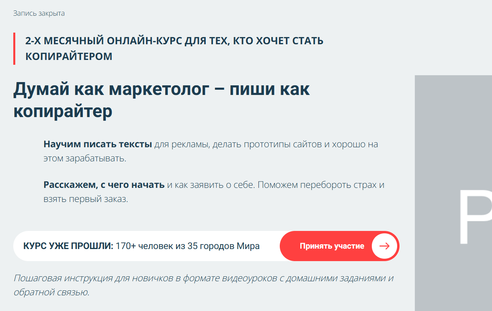
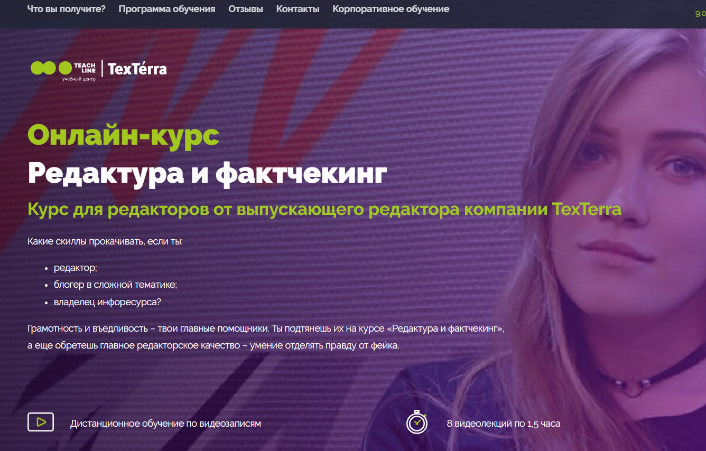

№1 Копирайтинг от А до Я — Skillbox

Сайт: https://skillbox.ru/course/copywriter/
Стоимость курса: 2 457 р/мес (при рассрочке на 12 месяцев)
Общая сумма: 29 484 р.
Вы получите сертификат — да
Это подтвердит ваше завершение курса и станет дополнительным плюсом при поиске работы.
Вы сможете создавать убедительные тексты для разнообразных аудиторий и успешно удерживать их внимание. Научитесь представлять себя как профессионала и увеличивать свои доходы.
Чек-листы и шаблоны для написания эффективных материалов
Портфолио из 5 работ
Практические задания на основе реальных брифов
Доступ к курсу будет предоставлен навсегда
Кому подходит этот курс
Начинающим писателям
Познакомитесь с особенностями копирайтинга. Освоите навыки написания убедительных текстов, сбора информации, структурирования контента и разработки привлекательного материала.
Контент-маркетологам и SMM-специалистам
Научитесь создавать продающие тексты для социальных сетей, email-рассылок, посадочных страниц и других рекламных каналов. Это позволит увеличить аудиторию вашего бренда и повысить лояльность клиентов.
Студентам и выпускникам гуманитарных специальностей
Получите практический опыт работы с коммерческими текстами и научитесь решать конкретные бизнес-задачи.
Тем, кто заинтересован в заработке текстами
Изучите профессию копирайтера. Научитесь качественно писать в различных форматах, выбирать интересные проекты, предлагать свои услуги и начинать зарабатывать.
Чему вы сможете научиться
Создавать качественные тексты
Вы будете способны работать в различных стилях и форматах, а также подкреплять свои тексты наглядными примерами.
Работать с брифами
Освоите методики быстрого анализа задания и эффективного взаимодействия с клиентами.
Писать для целевой аудитории
Научитесь понимать потребности читателей и создавать контент, который будет им интересен и полезен.
Редактировать свои работы и работы других
Узнаете, как избежать канцеляризмов и избавляться от лишнего. Овладеете методами, которые помогут сделать тексты увлекательными.
Презентовать свою работу
Вы научитесь реагировать на правки и споры, а также находить общий язык с клиентами.
Составлять портфолио
Разберетесь в том, как выбрать работы для портфолио, обосновать стоимость и успешно презентовать себя заказчикам.
Содержание курса
Вы ждёт увлекательная система вебинаров и практических занятий на реальных примерах.
8 тематических модулей
41 онлайн-занятие
Основы профессии
Типы текстов – статьи
Типы текстов – карточки
Типы текстов – рассылки
Другие форматы текстов
Что делает текст мощным
Методы работы с клиентом и организации труда
Личный брендинг
Заключительный проект: создание текстового контента по брифу клиента
Спикеры
Сергей Король
Контент-директор Яндекса
Людмила Сарычева
Руководитель редакторского бюро «Гладлакс», редактор и автор книг по текстам
Полина Накрайникова
Редактор роста в «Горящей избе»
№2 Факультет редактуры и копирайтинга в Geekbrains

Диплом о профессиональной переподготовке — да
Государственная образовательная лицензия — да
Цена: от 2 907 руб в месяц при рассрочке до 36 месяцев
ФОРМАТЫ ОБУЧЕНИЯ:
Занятия в группе под руководством преподавателя
Онлайн-лекции и вебинары
Видеозаписи учебных занятий
ДЛИТЕЛЬНОСТЬ — 12 месяцев (2 занятия в неделю)
РЕЗУЛЬТАТ — Диплом
4 работы в портфолио
ГАРАНТИЯ — Трудоустройство после завершения обучения
Кому подойдет курс
Копирайтерам
Вы научитесь, как написать текст, который покажет клиентам, как продукт решает их проблемы. Научитесь объяснять доступно и эффективно.
Тем, кто желает сменить профессию
Станьте экспертом, научитесь создавать комплексные информационные материалы и сформируйте портфолио для старта карьеры.
SMM-менеджерам и email-маркетологам
Расширьте свои профессиональные горизонты, научитесь работать с текстами на уровне редактора, повышайте конверсии и свою эффективность.
Программа обучения
1
Подготовка: определяемся с профессией
Создание текста
Работа с информацией
Редактирование
Введение в профессию
2
Юридические аспекты
Текст в интернете
Этика медиапейза
Юридические аспекты
Основы авторского права
Редакторы и граждане: как защитить свои права?
Риски работы с контентом: потенциально опасные темы
Редактура в различных медиах: юридические нюансы
3
Формирование контент-стратегии
Основы верстки
Создание цифровых проектов
Аналитика
Формирование контент-стратегии
Что такое контент-стратегия
Каналы распространения контента
Редакционная политика
Вывод в реальность
4
Работа в команде
Взаимодействие с заказчиками
Личное фриланс-опыт
Работа в команде
Роли в команде
Распределение задач в команде
Основные инструменты для проектной деятельности
Как найти подрядчиков
Как нанимать сотрудников
Как принимать работу: критика, обратная связь, оплата, документы, рекомендации
Бюджет
Эксперты
Павел Федоров Продакшен-директор КБ «Палиндром»
Создатель Telegram-канала «Паша и его прокрастинация», автор подкастов «Поредачим» и «Что-то горит». Запускал спецпроекты в «Лайфхакере», работал в маркетинге «ВКонтакте», управлял контентом на Profi.ru, редактировал в «Нетологии».
Татьяна Симакова Главный редактор сайта The Village
Основала медиа «Большая деревня», вела авторские колонки для Wonderzine, Colta.ru, OpenSpace и «Афиша Daily».
Вы научитесь создавать тексты для любых целей и аудиторий. Рекламируйте продукты с помощью текстов, которые невозможно игнорировать.
№3 Коммерческий редактор/копирайтер — Нетология

Сайт: https://netology.ru/programs/kontent-menedjer-edpro#/presentation
Формат обучения: Видеолекции, вебинары, викторины, практические занятия, итоговая работа
Редактор контента помогает бизнесу достигать целей с помощью текстов. Он определяет форматы материалов, формирует команду, создает контент-стратегию и оценивает её эффективность.
Профессия коммерческого редактора включает больше, чем просто редактирование. Это осознание задач и управление ситуацией.
Кому подойдет курс
Журналистам, копирайтерам и начинающим редакторам
Погружение в digital-формат откроет новые возможности и позволит начать работать с контентом для компаний.
Маркетологам, PR- и SMM-специалистам
Вы научитесь продвигать бренд с помощью контента и гармонично взаимодействовать с редакцией.
Тем, кто стремится сменить профессию
Вы научитесь работать с разными форматами контента, разрабатывать стратегии и управлять редакционной командой.
Чему вы сможете обучиться
Создавать тексты, которые решают бизнес-задачи
Статьи для корпоративных блогов и медиа, контент для постов в социальных сетях и email-рассылок.
Верстать тексты и лендинги
Собирайте материалы в таких сервисах, как Tilda, Readymag, Setka, WordPress и создавайте целые информационные проекты.
Использовать техники сторителлинга
Подбирать иллюстрации, основываясь на принципах типографики и соблюдая текстовую «гигиену».
Выстраивать редакционные процессы
Планируйте действия команды, создавайте редакционные стандарты и контент-план, определяйте ключевые показатели.
Организовывать дистрибуцию контента
Выбирайте каналы для продвижения, просчитывайте бюджет на дистрибуцию и создавайте медиаплан.
Работать с аналитикой
Отслеживайте показатели с помощью веб-аналитики, чтобы оценить результативность контента и маркетинговых стратегий.
Итоговый проект
Вы разработаете контент-стратегию или бизнес-план с концепцией специального проекта, основываясь на реальной задаче или проекте. Если власونهет своего, мы предложим вам учебное задание.
Возможности обучения
Коммерческий редактор — с нуля
Для тех, кто хочет начать новую карьеру
8,5 месяцев
330 часов
52 лекции по 1,5 часа
27 домашних заданий с проверкой
Содержание программы
Работа с текстами
Упаковка контента
Специализация: основы контент-маркетинга
Вы научитесь писать для соцсетей, создавая лендинги, вести корпоративные блоги и разрабатывать email-рассылки. Сможете собирать статьи в Readymag, изучите структуру лендингов и методы вёрстки. Также узнаете, как организовать работу в команде и создать контент-стратегию.
Рассрочка: 3 785 р / мес. на 18 месяцев
Общая стоимость: 68 140 р
Коммерческий редактор PRO
Для специалистов, работающих с текстами и стремящихся стать редакторами
7 месяцев
309 или 262 часа — в зависимости от специализации
42 или 48 лекций по 1,5 часа
18 или 12 домашних заданий с проверкой
Содержание программы
Упаковка контента
Сторителлинг
Выбор специальностей: основы контент-маркетинга или создание специальных проектов
Рассмотрите разнообразные форматы контента и изучите методы оценки их эффективности. Освойте платформы Tilda, Readymag, Setka и WordPress. Узнайте, как выстроить взаимодействие в команде и монетизировать ваш проект.
Рассрочка: 3 326 р / мес. на 18 месяцев
Полная сумма: 59 880 р.
Образовательная программа
Основной курс
Создание маркетинговых текстов
Редактура и упаковка материалов
Сторителлинг
Все на тарифе «Коммерческий редактор PRO»
Направления
Контент-стратег
Разработка специализированных проектов
Коммерческий автор от TexTerra

Сайт: https://teachline.ru/courses/commercial-author/
Стоимость: 12000-26000 р.
Продолжительность: 14 видеоуроков по 1,5 часа
По окончании вы получите диплом и рекомендательное письмо, что упростит поиск клиентов.
Курс позволит вам:
Быстро освоиться в новой профессии Получать заказы, помогать бизнесам и зарабатывать через интернет из любой точки мира. Увеличить цену на свои тексты Расти с уровня биржевого копирайтера до профессионала, работающего в среднем и высоком ценовом сегменте. Научиться создавать тексты для бизнеса Если вы занимаетесь маркетингом, но не умеете писать анонсы, рекламные тексты, кейсы и статьи, курс даст вам эти навыки.
Что вы получите?
14 видеороликов по 1,5 часа. Проверка домашних заданий и обратная связь от преподавателей. Возможность задавать вопросы преподавателю. Знания и навыки по созданию текстов различных форматов – от статей до лендингов. Базовые знания по оптимизации текстов (SEO) и интернет-маркетингу. Умения, необходимые для профессиональной корректуры и редактуры текстов. Инструменты для нахождения заказчиков (в том числе менее известные). Возможность доступа к дополнительным материалам и записям лекций в течение года.
Программа курса
Основные аспекты копирайтинга. Изучим задачи и особенности копирайтинга в контент-маркетинге. Определим обязанности копирайтера и возможности для профессионального роста. Обсудим этический кодекс.
Типы текстового контента и особенности его создания. Какой должен быть полезный и актуальный контент. Основные типы контента и особенности разработки. Текст для лендингов. Специфика лендинга и текста для него. Структура текста для лендинга: его блоки и формы для обратной связи. Почему текст для лендинга является полноценным прототипом. Форматы контента, интеграция нестандартных элементов в статьи.
Необычные форматы: инфографика, видео, тесты, white paper. Что такое ньюсджекинг и какие у него преимущества? Какие виды контента наиболее вирусные и как измерять вовлеченность. Что актуально для B2C и что для B2B. Исследование источников. Как подобрать тему, оптимизировать контент, собирать информацию и проверять ее достоверность (фактчекинг). Как написать глубокую статью по теме, в которой вы не являетесь экспертом.
Структура и оформление. Различие восприятия печатного текста и веб-контента. Роль структуры в восприятии. Основы HTML для коммерческих авторов. Учимся оформлять публикацию.
Примеры удачного и неудачного оформления. Стилистика. Как базовые навыки стилистики помогут писать увлекательные тексты. Почему важно разбираться в стилистике, если редактор всё исправит. Как аудитория реагирует на тексты в разных стилях. Необходимые стилистические приемы и науки о них. Примеры успешных случаев, когда стиль оказался удачным.
Журналистика в коммерческом писательстве. Сравнение коммерческого автора и журналиста. Критерии, по которым можно судить о хорошем журналисте. Форматы контента в журналистике. Применение креативного письма. Тренируем писательские навыки различными методиками.
Утренние страницы, метод от противного. Фрирайтинг: «Пятнашка» Марка Леви и техника пятисловий. Кьюбинг и шесть шляп мышления Эдварда де Боно. Текстовый контент для социальных сетей: посты и рекламные объявления. Общая концепция контента в соцсетях: в чем заключается и зачем она нужна.
Как составить рубрикатор и план контента. Стандартная структура поста. Форматы контента в разных соцсетях для коммерческих страниц: Instagram, ВКонтакте, Facebook. Редактура и корректура. Как делать вычитку и самовычитку, не сокращая текст до неузнаваемости. Как вносить изменения, чтобы не утратить авторский стиль.
Основные правила и задачи редактирования. Корректура. Важные моменты, о которых нужно знать, распространенные ошибки. Как проверять себя, на какие источники полагаться о правилах русского языка. Как поступать с новыми словами, которых нет в словарях. Основы SEO. Как привлечь трафик из поисковиков. Для чего нужна оптимизация текста.
Как получать ключевые слова. Как верно распределить ключевые слова в тексте. Как избежать переоптимизации текста. Основные принципы SEO. Где искать клиентов и как реализовывать свои услуги. Где найти проекты с хорошей оплатой. Как грамотно заявить о себе и развивать личный бренд.
Как создать портфолио и подготовить коммерческое предложение. Практическое занятие. Анализ ошибок. Ответы на вопросы по итогам курса и завершение текущих тем. Практические рекомендации.
Копирайтер для экспертов и онлайн-школ — Ольга Придейная

Сайт: https://prideina-course.ru/
Стоимость:
Самостоятельный — 22500 р
Базовый — 29500 р
Хочу максимум! — 45500 р
Для кого предназначен этот курс
Для тех, кто:
мечтает стать копирайтером и работать удаленно
любит писать и задумывается о том, чтобы сделать это хобби профессией
хочет легко находить работу даже в кризисные периоды
уже пишет тексты на заказ в Instagram и стремится расширить свои услуги и перейти на новый уровень
стремится не только получить теорию, но и много практики
желает научиться создавать высокооплачиваемые тексты
Курс подходит
Энтузиастам копирайтинга
Вы научитесь составлять тексты для лендингов, email-рассылок, лид-магнитов и постов в Instagram, включая экспертные и продающие. Сможете создать портфолио и сразу начать работу по окончании курса.
Уже практикующим копирайтерам
Вы повысите качество контента для экспертов, укрепите свои навыки в маркетинге и сможете «упаковать» себя, повысив ценность и стоимость своих услуг. Вы ознакомитесь с аспектами инфобизнеса и принципами работы экспертов и онлайн-школ.
SMM-специалистам, контент-менеджерам и администраторам Instagram
Вы изучите, как создавать убедительные сообщения, захватывать внимание читателей с первых строк, писать с акцентом на выгоды, а также привлекать новую аудиторию через текст. Станете универсальным специалистом с возможностью более высокой оплаты.
Формат обучения
Месяц активной работы с текстами.
Обучение проходит онлайн на платформе Getcourse.
Раз в неделю участвуете в живых вебинарах, где осваиваете новые знания. Всего 4 вебинара с ответами на вопросы и разбором распространенных ошибок. Если вы не можете посетить, доступны записи.
Помимо вебинаров, в каждом образовательном блоке вас ждут видеоуроки и дополнительные материалы: чек-листы, инструкции и т.д.
Два раза в неделю вам нужно будет выполнять домашние задания в удобное время.
Вы получите детальную индивидуальную обратную связь в аудиоформате. Ничто не ускользнет от внимания преподавателей.
Есть доступ к групповому чату для общения, поддержки и оперативных вопросов.
В чате вы общаетесь с автором курса и другими обучающимися.
На 5-й неделе вы проходите стажировку в реальных проектах (в тарифах «Базовый» и «Хочу максимум»). Получите опыт взаимодействия с заказчиком и возможность работы во время обучения.
По завершении курса получите доступ к чату вакансий в Telegram среди выпускников. Это облегчит процесс поиска работы.
Содержание курса
Первая неделя
1-й блок: Убедительный коммерческий текст. Как продавать через текст.
Как писать просто, но убедительно.
Структура текста.
Формулы для эффективного продающего текста.
Захватывающее начало. Как заинтересовать читателя.
Психология покупок. Продающий блок в тексте. Как представить продукт/услугу на языке выгод.
Призывы к действию, формулы призыва.
Как преодолеть стеснение при написании текстов для продаж.
Вторая неделя
2-й блок: Писать тексты для лендингов.
Создание лендинга для бесплатного продающего вебинара. Структура, блоки.
Как формировать привлекательные заголовки и подзаголовки.
Какие триггеры применять.
Составляющие текста для лендинга.
Тексты для лендингов как одна из самых востребованных услуг.
3-й блок: Тексты для email-рассылок.
Основные принципы email-рассылок.
Как грамотно составить email-рассылку для эксперта, чтобы письма читали до конца.
Различные типы рассылок.
Аспекты вебинарной серии писем. Какие сообщения нужно писать и в каком порядке.
Структура письма.
Обязанности копирайтера.
Как оценить успешность рассылки и повысить её эффективность.
Как уменьшить риск попадания в папку «Спам».
Третья неделя
4-й блок: Экспертный контент в Instagram.
Как установить доверительные отношения с подписчиками.
Основные принципы экспертных текстов.
Как адаптироваться к стилю эксперта и выстраивать коммуникацию с ним.
Контентная воронка и способы вовлечения в постах и историях.
Создание контентного плана и плана по воронке.
Типы и цели контента в Instagram.
5-й блок: Как максимально привлечь участников на вебинар через Instagram эксперта.
Блог эксперта: как организовать максимальное количество участников на вебинар.
Классические и альтернативные форматы постов-анонсов.
Сторителлинг: Искусство написания историй
Как привлечь внимание аудитории
Неделя 4
Блок 6: Лид-магниты.
Что такое лид-магниты?
Лид-магниты представляют собой инструменты, позволяющие привлекать потенциальных клиентов. Они помогают копирайтерам не только сманить внимание, но и заработать на этом.
Виды лид-магнитов и их предназначение
Лид-магниты имеют множество форматов, которые служат различным целям и задачам.
Принципы разработки лид-магнитов
Существует ряд правил, следуя которым можно создать успешные лид-магниты.
Дополнительные уроки:
- Урок от психолога «Как преодолеть страхи начинающего копирайтера».
- Урок «Создание текстов для лендингов платного продукта».
- Урок «Управление копирайтинг-проектами: как оптимизировать свои задачи».
- Урок «Задачи и управление задачами».
- Урок «Позиционирование контента для образовательных продуктов».
- Урок «Создание прототипа лендинга».
- Урок «Яндекс.Дзен: как работать с этой платформой».
- Урок «Написание текстов для таргетированной рекламы».
Стажировка
Доступные тарифы: «Базовый» и «Хочу максимум».
Неделя 5
Стажировка (тарифы «Базовый» и «Хочу максимум»).
Информация об авторе курса
Ольга Придеина
Копирайтер, филолог, автор образовательных программ по копирайтингу.
- 5 лет опыта в копирайтинге.
- Свыше 4,5 тысяч коммерческих текстов для заказчиков.
- Более 600 выпускников школы копирайтинга, многие из которых сотрудничают с популярными блогерами.
Курс по копирайтингу

Копирайтинг — это необходимый навык для современного специалиста. Он может стать как дополнительным умением, так и основным источником дохода. Школа молодого копирайтера обкиевает всевозможные знания и навыки, которые необходимы для создания текстов в коммерческих целях. Программа курса включает в себя изучение основ копирайтинга, особенностей написания текстов для различных стилей и целей, а также технических параметров и приемов редактирования. Участники выполняют практические задания для развития креативного мышления и повышения качества своих работ.
В курсе предусмотрено восемь онлайн-занятий с выполнением домашних заданий. Практика — это ключ к успеху, поэтому рассчитывайте на серьезную работу. После каждого занятия студенты получают задания и получают обратную связь от тренера, а также возможности прокомментировать тексты своих коллег.
Занятия проходят по будням с 10.00 до 12.00, два раза в неделю.
Курс от Ирины Голдман

Сайт: https://spacecool.ru/copywriting
Стоимость: 8 888 РУБЛЕЙ
Интенсивный курс по копирайтингу с опытным редактором из Cosmo и популярным блогером Ириной Голдман.
Продолжительность курса — 4 недели.
7 эксклюзивных уроков от 1,5 до 2,5 часов: 6 записанных + 1 в формате онлайн.
6 домашних заданий с индивидуальным разбором и отслеживанием вашего прогресса.
Курс по техническому писательству

Сайт: https://protext.su/pro/kurs/
Продолжительность курса: 72 часа.
Стоимость обучения: 19800 руб. для частных лиц и 24900 руб. для юридических лиц.
Цель курса
Совершенствование квалификации специалистов в подготовке технической документации и аналитических материалов в области IT. Формат обучения: онлайн. Вы самостоятельно выбираете дату начала и время занятий.
Что вы получите в результате обучения?
- Если вы новичок, курс даст вам полное понимание работы и роли технического писателя. Вы готовы создать свои первые проекты для портфолио.
- Вы обретете уверенность и много новых знаний и впечатлений.
- Вы получите сертификат от профилированной компании, который поможет вам сделать первый шаг в новую карьеру.
- Если у вас уже есть опыт в техническом писательстве, обучение поможет вам выявить слабые места и улучшить свои навыки.
- Вам будет полезно обсудить профессиональные проблемы и получить новые знания, которые могут открыть новые карьерные горизонты.
Программа курса
- Введение в профессию
- Как стать техническим писателем
- Юридические аспекты и сферы работы
- Типы текстов и их аудитория
- Форматы документации и статей
- Стиль написания технических текстов
- Основы написания документов
- Методология написания документации на программное обеспечение
- Методология написания аналитических статей
- Разработка видеодокументации
- Создание презентаций
- Описание программного кода и схем
- Разработка технических заданий и маркетинговых текстов
- Работа с документацией на перевод
- Технические переводы и их оформление
- Выбор программного обеспечения для работы
- Специфика работы технического редактора
- Документирование по стандартам
- Итоговая практическая работа.
Курс продвинутого копирайтинга
Сайт: https://copywriterinfo.ru/
Курс платный.
Что ожидает участников курса
- Постоянная практика написания: переписывайте и создавайте вновь, что является основой обучения.
- 49 видеоуроков, которые вы можете изучать в любое время и возвращаться к ним при необходимости.
- Личный кабинет с доступом как с мобильных устройств, так и с компьютера, где все структурировано для вашего удобства.
- После каждого урока выполнение заданий, что поможет освоить навыки копирайтинга.
- Ответы на вопросы, которые вы можете задать в комментариях, с гарантией обратной связи в течение 24 часов.
- Весь материал представлен с практическими примерами, что обеспечивает наглядность.
- Постоянный доступ к материалам курса и возможность их использования в любое время.
- Создание готового портфолио с рекламными текстами, которые вы будете писать в ходе курса.
- Вебинары каждую неделю для обратной связи по вашим текстам и решения проблем.
- Гибкий подход: возможность изучения без контроля и регулярные консультации по завершении обучения.
К нашей группе можно присоединиться в любое время, независимо от того, завершил ли кто-то уже программу. Здесь нет необходимости спешить – вы можете учиться в своем удобном темпе. Каждый воскресенье мы собираемся на вебинар, где я предоставляю обратную связь по всем текстам, которые студенты присылают мне. Пропустили встречу, не смогли прийти? Заболели или уехали? Не переживайте — вы сможете присоединиться позже или просмотреть запись.
Авторский Курс — Надежда Сокирская

Сайт: https://sokirskaya.ru/ Длительность: 6 недель обучения СТОИМОСТЬ ОБУЧЕНИЯ: Базовый курс — 35000р Больше практики — 46000р Максимум практики — 85000р
Кому будет полезен этот курс?
Для тех, кто хочет заниматься написанием текстов на заказ, но не имеет опыта. Ваше образование или предыдущая деятельность не имеют значения. Если вы готовы учиться и трудиться, за 6 недель вы освоите необходимые навыки, сможете работать с реальными заказчиками и создать свое портфолио. Для профессионалов, работающих с текстом, но недовольных своим доходом. Вы оцените свои сильные и слабые стороны, проанализируете ошибки, получите новые знания и уверенность. Научитесь создавать контент, который увеличивает продажи, и станьте специалистом, которого будут искать владельцы бизнеса и блогеры.
Структура курса
6 интенсивных недель обучения, включая новые уроки каждый рабочий день;
12 домашних заданий;
Групповая работа в командах по 10-12 человек с наставником;
Проверка всех заданий и подробная обратная связь от куратора;
Работа с реальными задачами от заказчиков и получение от них отзывов;
Создание актуального портфолио на Tilda в процессе курса;
Поддерживающий Telegram-канал с коучем;
Система накопления баллов и призы.
Программа курса
Вводный модуль с инструкциями. Доступ сразу после оплаты;
Поиск работы. Открывается со второй недели;
Ключевые навыки копирайтера;
Тексты, способствующие росту продаж. Практика с клиентами;
Контент для социальных сетей. Практика с заказчиками;
Портфолио. Подведение итогов;
Дополнительный тренажер для отработки взаимодействия с клиентами.
Автор курса
Надя Сокирская
Журналист, редактор и блогер. Окончила Литературный институт, где изучала литературное творчество. Работала в средствах массовой информации более десяти лет: сначала в качестве редактора на радиостанциях «Русская служба новостей» и «Говорит Москва», затем ответственным редактором на сайте «Комсомольской правды», а с 2014 по 2017 год была главным редактором Леди.Mail.Ru. Преподавала интернет-журналистику на журфаке МГУ, обучала стажеров и активно сотрудничала с авторами. Запустила блог, который за десять месяцев привлек более 100 тысяч подписчиков. Преподает в школе телевидения «Останкино ТВ».
Кураторы
Наталья Семенова
Шеф-редактор PR-службы Правительства Москвы. Ранее работала ответственным редактором на aif.ru и шеф-редактором на сайте телеканала Минобороны РФ «Звезда».
Алена Костомарова
Шеф-редактор и заместитель руководителя отдела спецпроектов МИА «Россия сегодня». Помогает брендам развивать их имидж и решать бизнес-задачи. Ранее сотрудничала с Geo, РБК Lifestyle, Snob и другими изданиями. Опыт работы с текстами — 14 лет.
Конструктор продающего текста от Школы копирайтинга Дениса Каплунова
Сайт: https://deniskaplunov.com/kpt/ Цена: Стандартный курс: 18 525 руб Премиум курс: 37 275 руб
За полтора месяца, основываясь на более чем 70 кейсах, вы изучите 100 самых эффективных техник копирайтинга и сможете увеличить конверсии своих текстов минимум в три раза.
Кому будет полезен этот курс?
Владельцам бизнеса и предпринимателям
Вы научитесь создавать эффективные тексты, способные привлечь в 3–5 раз больше клиентов и увеличить доход.
Копирайтерам (как фрилансерам, так и штатным)
Вы улучшите свои навыки, освоите новые методы и повысите свою продуктивность, в результате чего сможете зарабатывать в 3–5 раз больше.
Экспертам и консультантам
Вы научитесь писать тексты для продвижения своих услуг, что поможет поднять средний чек и сделать ваши доходы в 3–5 раз выше, чем сейчас.
Маркетологам и менеджерам по продажам
Вы повысите свои навыки, что даст вам конкурентные преимущества и поможет увеличить личные результаты на 3–5 раз.
Что вас ожидает?
1,5 месяца обучения;
Свыше 100 техник копирайтинга;
Проверка домашних заданий;
70+ примеров текстов;
Гибкий график обучения;
18 видеоуроков;
Конспекты всех лекций;
Дополнительные материалы.
Программа курса
«Заголовки»
#1
Основной вопрос, который должен решать заголовок.
Три ключевые функции заголовка.
Как использовать «надзаголовок» для привлечения внимания читателя.
Примеры реальных надзаголовков из продающих текстов.
20 формул для создания эффективных заголовков.
Когда уместен подзаголовок и его три основные функции.
20 примеров сочетания «Заголовок + Подзаголовок».
В результате: вы научитесь создавать запоминающиеся заголовки, которые привлекают внимание и интригуют.
«Вводная часть»
#2
Причина, по которой 80% текстов теряют читателей.
Народная формула вовлечения.
Пять задач вводной части текста.
Что такое «мини-заголовки» и их роль.
7 стратегий создания мини-заголовков и 34 примера.
10 классических техник для вводной части продающего текста.
10 креативных подходов к написанию вводной части.
В результате: вы поймете, как начать продающий текст так, чтобы вызвать доверие читателя и «подогреть» его интерес к продукту/услуге.
«Представление и описание»
#3
Эффективность «Тройной выгоды».
7 способов предложить новое в старом продукте.
Двухступенчатая формула представления продукта.
Уникальное торговое предложение в 10–20 словах.
5 коротких и длинных примеров представления.
14 методов описания продукта/услуги.
Теглайн как средство усиления текста + 7 вдохновляющих примеров.
В результате: вы научитесь формулировать уникальное торговое предложение и подчеркивать выгоды продукта/услуги в условиях высокой конкуренции.
«Доказательства»
#4
Почему в тексте нужны доказательства.
Как использовать SOCIAL PROOF и почему это важно.
Формулы успешного отзыва (с примерами).
Создание кейсов и написание вдохновляющих историй.
Доказательная сила цифр.
Инструменты для подтверждения компетенции.
16 типов и примеров нестандартных доказательств.
В результате: вы сможете предоставить убедительные аргументы для преодоления возражений клиента.
«Ценовое предложение»
#5
Что такое «продажа цены» и почему это важно.
Как писать, если цена не фиксирована.
Как убеждать, если цена одинакова у многих.
5 хитрых тактик работы с тарифами и пакетами.
4 типа и 9 примеров гарантий в продающих текстах.
Почему гарантия — это больше, чем просто возврат денег.
15 техник аргументации цены.
В результате: вы научитесь формулировать ценовое предложение так, чтобы клиент осознал, насколько выгодно сотрудничать с вами.
«Финал продающего текста»
#6
«Ловушка классного текста» — как убить конверсии.
Как должен завершаться продающий текст.
Универсальная формула призыва к действию.
«Действие с наименьшим сопротивлением» и увеличение конверсии.
Зачем в продающем тексте особое предложение.
Три типа и 22 примера специальных предложений.
15 примеров успешных завершений продающих текстов.
В результате
вы научитесь, как правильно завершать продающий текст, чтобы превратить читателя в клиента, готового к сотрудничеству сразу же после прочтения.
Как проходит обучение?
Старт
Вы получаете доступ к образовательной платформе с обучающими материалами курса.
Уроки
Вы последовательно изучаете видео-лекции каждого модуля (теоретическая часть и практические примеры).
Практика
Выполняете домашние задания и отправляете их на проверку.
Проверка
Тренер изучает ваше задание и предоставляет рекомендации по улучшению.
Консалтинг
Вы имеете возможность получить 2 дополнительные консультации от Дениса Каплунова (в пакете «Премиум»).
Кто является автором курса
Денис Каплунов
Известная фигура в области копирайтинга, контента и маркетинга. Создал отличную репутацию благодаря качественной работе с текстами. 12 лет опыта в индустрии продающего контента. Более 4000 успешно реализованных проектов для свыше 700 клиентов. Успешный опыт работы в 100+ различных сферах бизнеса. Основатель агентства «Студия Дениса Каплунова».
Что вы получите вместе с курсом
Бонус 1 — Мини-курс «Копирайтинг XXI века»
Бонус 2 — Комплект из 10 чек-листов
Бонус 3 — Мастер-класс «SOLD OUT»
Бонус 4 — Мастер-класс «Клиенты из соцсетей»
Бонус 5 — Мастер-класс «15 упражнений по копирайтингу»
Бонус 6 — Мастер-класс «Коммерческое предложение на 1 страницу»
Бонус 7 — Мастер-класс «Переписка с клиентами»
«Базовый курс Главреда» от Максима Ильяхова

На протяжении шести лет курс неоднократно обновлялся: в него добавлялись новые темы, а устаревшие пересматривались. В конце 2019 года вместе с Стасом Миляевым мы подготовили видеоверсию: ключевые знания о создании сильного текста представлены в 13 видеороликах. Я переосмыслил старые материалы и внедрил свежие темы:
- Использование Главреда
- Определение информационного стиля
- Стоп-слова
- Вводные конструкции
- Оценочные слова и усилители
- Штампы
- Заумь
- Синтаксис
- Канцеляризмы
- Кинематографические приемы
- Уточняющие конструкции
- Однородные члены предложения
- Ясность текста
- Коммуникация
- Практическое применение текста
- Контекст
- Следующие шаги
Углубленный 2-месячный курс ИНТЕРНЕТ-ПРОФЕССИЯ КОПИРАЙТЕР 2.0 от Натальи Реген
Сайт: https://infovoronka.ru/ipk2-0-price-special
Цена:
Пакет Базовый — 13990р
Пакет Стандарт — 20990р
Пакет Премиум — 40990р
Программа курса
Модуль 0
Подготовительный
На первом этапе курса вы познакомитесь с его структурой и процессом обучения. Мы освоим базовые принципы маркетинга, необходимые для профессиональной деятельности копирайтера. Вы узнаете основные аспекты профессии копирайтера и формулу «Т», которую сможете применять в своей работе. Также получите советы о том, как найти первого клиента для стажировки, чтобы обрести первый опыт сотрудничества с настоящим заказчиком.
Модуль 1
Статьи и тексты для сайтов
Выучите виды и форматы статей, которые должен уметь создавать копирайтер. Ознакомьтесь с примерами различных типов статей и выполните практические задания по написанию первых статей для создания портфолио. Узнаете, как формировать тексты для таких страниц, как главная, категории, услуги, о компании и других. Научитесь строить структуру текста на практике.
Модуль 2
Продающие тексты
Вы изучите разновидности и форматы продающихся текстов. Получите рабочую тетрадь по написанию текстов, которая сэкономит ваше время и предоставит конкретные структуры. Ознакомитесь с формулами, наиболее востребованными у клиентов, и выполните практическое задание по созданию продающего текста для портфолио.
Модуль 3
Социальные сети
Научитесь составлять истории, создавать контент-план для клиентов и писать текст для социальных сетей. Узнаете о контентных публикациях, цепочках прогрева для аудитории, рекламных и продающих постах.
Модуль 4
Рассылки, чат-боты и автоворонки
Изучите стратегию создания рассылок с примерами и шаблонами. Получите алгоритм для написания пяти видов писем. Освойте создание автоворон и чат-ботов: услуга начинается от 15 000 руб.
Модуль 5
Упаковка и самопрезентация
Научитесь формированию брифа, который регламентирует работу с заказчиком. Узнайте, как и где оформлять портфолио и описывать кейсы. Познакомьтесь с тем, как создать свою профессиональную страницу, группу или сайт для развития личного бренда.
Модуль 6
Клиенты и получение заказов
Разберитесь, где найти платежеспособных клиентов. Узнайте три эффективных способа для установления длительных отношений с клиентами. Научитесь проводить переговоры без страха и уверенно отвечать на любые возражения. В этом модуле также представлены лучшие платформы для поиска клиентов и шаблоны обращения к заказчику, чтобы повысить свои шансы на выбор.
Модуль 7
Выбор специальности для увеличения дохода
Определите, какую специализацию выбрать. Изучите основы различных специализаций копирайтинга: автоворонки, услуги, контент-маркетинг, интернет-магазины, онлайн-школы.
Модуль 8
Комплексные предложения для клиентов
Узнайте, как сделать повторные предложения заказчикам для увеличения дохода от одного проекта. Получите пошаговый алгоритм правильного предложения комплексной услуги. Разработайте систему получения заказов на суммы от 10 000 руб. и выше за проект.
Финал
Аттестация для получения сертификата.
План дальнейшего роста в профессии: как предстоит развиваться.
Личная система увеличения доходов.
Формат обучения
Уроки на образовательной платформе.
Регулярные обновления.
Вебинары с ответами на возникшие вопросы.
Поддержка куратора.
Удалённая профессия Копирайтер — Артур Грант и Вероника Головченко / Profi Internet
Сайт: https://copywriting.artur-grant.ru/
Длительность: 2 недели
Формат: онлайн
Цена: бесплатно
ЧТО ВЫ ПОЛУЧИТЕ?
Бесплатно пройдите 2-недельный курс по копирайтингу. Начните зарабатывать удаленно, создавая тексты на заказ.
АВТОРЫ КУРСА
Артур Грант – соавтор курса и основатель школы Profi-Internet. Копирайтер с семилетним опытом, который за первый год сразу же поднялся с низкого ценового сегмента (2-3 доллара за текст) до 200-400 долларов. Тексты, созданные Артуром для его проектов, принесли более 28 миллионов рублей за последние три года.
Вероника Головченко – «играющий» тренер с более чем семилетним опытом в копирайтинге, обучившая свыше 1000 человек на курсах и в индивидуальном коучинге.
Специалист по копирайтингу
Сайт: https://copy2.0.profiinet.ru/
Длительность: 3-месячный онлайн-курс
По завершении обучения вам будет выдан сертификат.
Цена:
Пакет «СТАНДАРТ» — 9 900 руб/мес
Пакет «VIP» — 15 900 руб/мес
Что вы получите от курса?
- Вы станете сертифицированным специалистом.
- Вы готовы к работе в качестве эксперта (с полным портфолио и личным сайтом).
- Освоите все аспекты работы и сможете принимать сложные заказы (включая продающиеся тексты), начиная от 5000 рублей.
- Смело будете находить дорогих клиентов и сможете запустить «сарафанное радио», чтобы получать обращения от клиентов самостоятельно.
- Избавитесь от страхов и сомнений, приобретете уверенность в своих силах.
- Достигнете поставленных целей (финансовая независимость, свобода, выход на новую работу).
Программа курса
модуль 01
4 недели
Мастер статей
• Основные инструменты для копирайтинга
• Отличия между LSI и SEO-копирайтингом
• Характеристика создания SEO-текстов для каждой страницы интернет-магазина
• Верстка текста
• Понятия: сниппет, хлебные крошки, метатеги
• Дизайн текста
• Создание контента для социальных сетей
• Алгоритм, позволяющий быстро и с удовольствием выполнять задания.
модуль 02
1 неделя
Поиск первых клиентов на биржах
• Характерные особенности выбора биржи копирайтинга
• Как правильно заполнить профиль, чтобы вас охотно выбирали заказчики
• Как составить отклик и начать зарабатывать.
модуль 03
4 недели
Создание эффективного портфолио
• Формирование «убойного» портфолио с нуля
• Как определить стоимость своей работы?
• Поиск вашей уникальности (УТП)
• Первые клиенты вне бирж: где их найти и как установить контакт.
модуль 04
4 недели
Мастер продающих текстов
• Разработка брифа
• Анализ целевой аудитории/конкурентов/продукта
• Эффективные формулы «дорогого» копирайтинга
• Пошаговые алгоритмы для создания продающих текстов.
• Сторителлинг
• Создание лендингов
• Email-рассылки
модуль 05
1 неделя
Поиск высокооплачиваемых клиентов
• Разработка кейсов
• 11 методов поиска клиентов от Артура Гранта
• Активные и пассивные способы
• Онлайн и оффлайн поиск
• Стратегическое партнерство
модуль 06
1 неделя
Профессиональная упаковка услуг
• Создание «ауры-экспертности»
• Определение специализации
• Нейминг
• Создание собственного сайта
Авторы курса
Артур Грант
• Соавтор курса, копирайтер и маркетолог, основатель школы Profi-Internet.
• В начале своей карьеры за один год поднялся с низкого ценового уровня (2-3 доллара за текст) до 200-400 долларов.
• Тексты Артура принесли его проектам более 140 миллионов рублей за последние 5 лет.
Вероника Головченко
• Соавтор курса, опытный тренер с более чем 8-летним стажем в копирайтинге.
• Обучила более 1200 человек, ставших успешными копирайтерами и зарабатывающими с удовольствием.
• Создала текстов на сумму более 7 миллионов рублей.
Кому подойдет курс?
Новичкам:
Овладейте одним из самых выгодных и популярных навыков в 2019-2020 году. Работайте из любой точки мира, по гибкому графику, получайте стабильный доход.
Начинающим копирайтерам:
Станьте лидерами в своей области, увеличивайте свои доходы и создавайте поток клиентов.
SMM-специалистам, SEO-экспертам, дизайнерам, маркетологам:
Предлагайте клиентам комплексные услуги, расширяйте спектр своих услуг и увеличивайте стоимость.
Текущим или будущим владельцам бизнеса:
Экономьте значительные средства на услугах, которые раньше оплачивали другим, и выбирайте проверенных подрядчиков.
Школа копирайтинга — Мария Солодар

Сайт: https://solodar.com/copywriting-school/
Длительность: 2-месячная программа обучения.
По окончании курса вы получите сертификат.
Стоимость участия — 59 900 РУБ.
Кому будет полезен курс?
Тем, кто ищет работу:
Желаете зарабатывать от 100 000 рублей, работая из любой точки мира, и достигнуть финансовой независимости.
Предпринимателям:
Планируете запустить новые направления бизнеса с маржой до 80%.
Маркетологам:
Хотите расширить свои услуги и с помощью текста воздействовать на поведение клиентов.
Новичкам:
Никогда не писали ни строчки, но стремитесь зарабатывать, создавая тексты.
К чему вы научитесь?
Вы научитесь писать эффективные письма, разрабатывать лендинги, маркетинговые материалы, презентации и прочие текстовые форматы с легкостью. Вы будете писать тексты для социальных сетей, которые будут развивать ваш блог и приводить к продажам, увеличивая охват. Освоите искусство создания продающих текстов, которые провоцируют покупку немедленно. А ещё:
Вы научитесь увеличивать финансовые показатели своего проекта, опираясь исключительно на качественное написание текстов. Вам станут доступны психологические техники, которые помогут убедить даже самых скептически настроенных клиентов. Также вы разберетесь в том, как строить долговременные отношения с заказчиками и стабильно зарабатывать не менее 100 000 рублей в месяц.
Общая структура курса
**МОДУЛЬ 1**
Вводный модуль: знакомство с основами профессии и организационными вопросами
Договор-оферта
Кто такой копирайтер? Что стоит знать об этой профессии и к чему нужно готовиться
Как пользоваться личным кабинетом и отправлять домашние задания
Работа с брифом — первоочередной шаг в создании любого продающего текста
Дополнительные материалы:
Шаблон брифа для копирайтера
Результаты модуля:
Вы освоили основные термины и концепции копирайтинга
Выбрали проект для прохождения стажировки
Изучили, как функционирует обучающая платформа
Научились работать с брифом
**МОДУЛЬ 2**
Психологические аспекты копирайтинга
Основы копирайтинга: база для качественных текстов
Как воздействовать на читателя: триггеры, которые необходимы копирайтеру
Сторителлинг: методика создания продающих историй
Дополнительные материалы:
Психология влияния в продажах и бизнесе
30 типов ментальных триггеров с примерами в текстах
Инструкция по созданию профиля целевой аудитории
Инструкция по созданию аватара
Примеры болей целевой аудитории
Результаты модуля:
Вы изучили ключевые аспекты копирайтинга
Научились правильно применять триггеры
Создали профиль целевой аудитории и аватара
Написали продающую историю для выбранного проекта
**МОДУЛЬ 3**
Создание смыслового содержания текста и разработка сильного торгового предложения
Уникальное торговое предложение и мощный оффер
Рекламные заголовки: как привлечь внимание и вызвать интерес
Дополнительные материалы:
УТП на основе декларации ценностей
Оффер и примеры
Формула специального предложения
Примеры офферов в технике специального предложения
Результаты модуля:
Создадите декларацию ценностей для своего проекта
Напишете убедительный оффер по формуле специального предложения
Сформулируете рекламные заголовки
**МОДУЛЬ 4**
Проектирование лендингов и создание коммерческого предложения
Как создать посадочные и продажи страницы с высокой конверсией
Коммерческое предложение и маркетинговый комплект
Дополнительные материалы:
Обзор платформы mottor
Пример разработки лендинга на Tilda
Элементы лендинга: оффер, дескриптор, призыв к действию
Инструкция по созданию посадочной страницы
Шаблон для проектирования подписной страницы
Пример прототипа для продающей страницы в Google Docs
Коммерческое предложение и маркетинговый комплект
Схема «21 вопрос для упаковки» Лебедева
21 вопрос для упаковки по методике Лебедева
117 вопросов для упаковки
Результаты модуля:
С нуля создадите проектировку страницы в конструкторе
Напишете коммерческое предложение для своего проекта
Научитесь создавать презентацию для коммерческого предложения
Представите маркетинговый комплект себя как копирайтера
**МОДУЛЬ 5**
Основы email-маркетинга и копирайтинг электронных писем
Как создать рассылку с высокой открываемостью писем
Email-маркетинг как универсальный инструмент продвижения
Правила создания продающего письма
Создание увлекающего и продающего контента для социальных сетей
Технические детали настройки авторассылки через GetResponse
Дополнительные материалы:
Мастер-класс «Цепочка взаимодействий»
Инструкция по написанию писем для e-mail-стратегий
Инструкция по созданию воронки продаж
Примеры стратегий email-маркетинга
Видео по работе с программой Xmind
Чек-лист по написанию и оформлению email-писем
Чек-лист по созданию и оптимизации серии писем
Примеры email-писем
Эффективный email-маркетинг (занятие от GetResponse)
Результаты модуля:
Научитесь писать письма с высокой открываемостью
Создадите email-стратегию для своего проекта
Напишете ряд писем, включая продающие
**МОДУЛЬ 6**
Копирайтинг для социальных сетей и мессенджеров
Создание текстов для Instagram: описание профиля, контентные и продающие посты
Оформление страниц и привлечение внимания в Facebook
Создание вовлекающего и продающего контента для социальных сетей
Копирайтинг для мессенджеров
БОНУС: Психология продаж в социальных сетях
Дополнительные материалы:
Гид «Принципы написания постов»
Пример оформления профиля
Плюсы и минусы платформы Facebook
Примеры вовлекающих и прогревающих постов
5 ошибок при написании постов
Сторителлинг
Структура продающей истории
Инструкция по составлению историй
Примеры историй
7 требований к рассылке в мессенджерах
Результаты модуля:
Оформите свой проект в Instagram и Facebook
Поймете, какие страницы в соцсетях успешнее и почему
Создадите серию вовлекающих постов
Научитесь отличиям в текстах для мессенджеров
Будете использовать различные типы контента в мессенджерах
Составите сообщение для мессенджера
**МОДУЛЬ 7**
Копирайтинг для видео
Создание продающего видео
Разработка сценария «Запуска по Волкеру»
Дополнительные материалы:
Пример продающего скрипта для видео
Пример продающего видео курса по эротическим танцам
Скрипт One Time Offer (OТO)
Скрипт для продающего видео
Пример ОТО
Как написать презентацию для продающего вебинара или выступления
Шаблон продающей презентации в Google-презентациях
Результаты модуля:
Создадите сценарий продающего видео для вашего продукта
Научитесь делать успешные запуски и напишите сценарии видео для запуска
Сформируете структуру продающей презентации для вашего проекта
**МОДУЛЬ 8**
Завершающий проект
Окончательный проект
Получение сертификата
Ваш БОНУС за отзыв о Школе копирайтеров
Результаты модуля:
У вас будет реальный кейс и готовые шаблоны, схемы и алгоритмы для написания любых текстов
После успешной защиты финального проекта вы получите сертификат
**БОНУСНЫЙ БЛОК**
Где искать клиентов, как начать новичку и как повышать стоимость своей работы
Сколько стоит работа копирайтера: какие суммы называть заказчику?
Как устроиться удаленно в компанию мечты: весь путь от резюме до онлайн-собеседования
Как уплачивать налоги, если вы фрилансер или самозанятый
СПИКЕРЫ
Мария Солодар
Специалист в интернете, онлайн-продюсер, предприниматель
Олег Баша
Генеральный директор в GetResponse Россия, профессионал в области email-маркетинга
Информационный стиль и редактура текста от Бюро Горбунова

Общая структура курса
**Первый день: слова**
Стиль текста и его информативность
Принципы редактирования
Использование стоп-слов
Практическое задание: поиск стоп-слов
Достоверность текста и подбор фактов
Практическое задание: работа с фактами
Ошибки различных уровней писателей
Практическое задание: повышение информативности с помощью редактуры
**Второй день: предложение, абзац и текст**
Емкость предложений
Энергетический синтаксис
Знаки препинания
Практическое задание: редактирование предложений
Логичность абзацев и правило капрала
Практическое задание: редактирование абзацев
Заголовки и подзаголовки
Структурирование идей
Практическое задание: создание каркаса статьи
Ритм текста и методы дидактики
Практическое задание: написание статьи
**Третий день: информационный продукт**
Ведение работоспособного текста и его формула
Честность и манипуляции
Подстройка под читательскую аудиторию
Иллюстрации и их влияние на текст
Практическое задание: выбор иллюстраций
Совершенные элементы предложения
Язык общения и машины
Практическое задание: публичное заявление
Правила акцентов и управления вниманием
Практическое задание: параллельное изложение
Анатомия информационной статьи
Практическое задание: подготовка статьи к публикации
**Четвёртый день: реклама**
Принцип полезности
Реклама, которую захотят поделиться
Создание рекламного заголовка
Структура продающей страницы
Личность и эмоции в рекламе
Этичные и неэтичные приемы
Работа с возражениями
Отзывы и строительные приемы
Различия между длинной и короткой страницами
Создание текста для продуктовой страницы в интернет-магазине
Хорошо для человека — хорошо для поисковых систем
Практическое задание: создание длинной страницы
Итоговый алгоритм создания текста
Маленькие хитрости работы редактора
Инструменты редактирования и редакционная политика
Польза и вред текста. Когда стоит отказаться от написания
Автор и ведущий курса
Максим Ильяхов
Главный редактор бюро с 2009 года, автор рекомендаций по написанию текстов и редактуре, разработчик сервиса «Главред», кандидат педагогических наук.
«Инициал» от Lifehacker.Ru

Сайт: https://lifehacker.ru/special/initial/
Цена: бесплатно
Научиться писать качественно не так уж сложно. Для этого нужно лишь желание, время и много практики, а также хороший наставник.
Мы, редакторы Лайфхакера, стремимся стать вашими наставниками. Мы работали над тысячами статей, улучшали их, допускали ошибки, мучились и делали выводы. Теперь мы готовы поделиться приобретённым опытом в формате рассылок.
Курс состоит из 12 писем, которые будут приходить вам на электронную почту каждую неделю. В каждом письме содержится теория и множество примеров.
Вы научитесь:
придумывать увлекательные темы;
Школа копирайтинга — Ольга Соломатина
Продолжительность: 2 месяца
Стоимость: 24900р.
Удается диплом установленного образца
Обучение в онлайн-школе предоставит вам возможность освоить одну из самых популярных профессий на сегодняшний день, что позволит зарабатывать из любой точки мира или находясь дома, заботясь о детях.
Программа курса в Школе копирайтинга будет сосредоточена на трех ключевых аспектах:
- Навыки общения с клиентами.
- Теоретические и практические основы копирайтинга и маркетинга.
- Умение эффективно позиционировать себя и находить высокооплачиваемую работу.
Курс
- Эффективное взаимодействие с клиентами.
Во время учебного процесса вы получите реальные задания и доход. Практика – лучший учитель.
Мы рассмотрим, где и как копирайтер может найти потенциальных работодателей.
Научитесь совместно с клиентом или самостоятельно составлять задания на текст.
Изучите, какие вопросы помогут понять истинные потребности заказчика.
Ознакомьтесь с этапами согласования текстов и выявлению наиболее подходящих клиентов, какие контракты можно избегать.
Освойте методы решения конфликтов с клиентами и подходы к их предотвращению.
Разберемся, что стоит за фразой: «Мне это не нравится».
Научитесь обсуждать правки и замечания.
Будет полезно знать, как реагировать, когда клиент затягивает сроки. - Основы копирайтинга и маркетинга.
В процессе обучения вы будете постоянно писать и редактировать свои тексты, так как именно это поможет вам развить навык письма. После каждого задания я буду делать редакцию и объяснять, почему вношу те или иные изменения.
Вы исследуете, как копирайтеры находят нужную информацию и какие методы используются для сбора данных.
Изучите более 20 типов планов материалов и узнаете, как они выбираются на практике.
Научитесь писать тексты в разных стилях: информационном, деловом, научном и других.
Вы освоите разные жанры – от постов и заметок до аналитических отчетов и эссе.
Овладеете всеми 12 видами пресс-релизов.
Научитесь редактировать как свои, так и чужие тексты.
Познакомитесь с канцеляритами и штампами, а также изучите, когда их использование оправдано.
Специалисты по орфографии и пунктуации из Издательского дома «КоммерсантЪ» проведут для вас мини-лекции.
Разберемся в различиях между копирайтингом и журналистикой.
Вы научитесь проводить интервью, подготовив хороший список вопросов, а также овладеете основами стилистики.
Маркетолог расскажет о рекламе, воронках продаж и уникальных торговых предложениях, а я добавлю свои знания по продающим текстам и нативной рекламе.
Научитесь писать для компаний, составлять учебные материалы и отзывы.
Изучим методы работы с возражениями клиентов.
Вы освоите оформление текстов и страниц.
Изучим азы сторителлинга и как правильно писать для различных социальных платформ.
Познакомитесь с приемами для создания эффективных заголовков и подзаголовков.
Вы поймете, когда предпочтительнее использовать графические материалы вместо текстов. - Позиционирование и поиск высокооплачиваемой работы.
Раскроем суть редакционных политик.
Научитесь создавать свое портфолио и презентовать себя.
Вы научитесь зарабатывать отзывы и рекомендации, а также поймете, как редактировать тексты других людей, сохраняя хорошие отношения.
Смиритесь с перфекционизмом и внутренним критиком.
Узнайте, сколько вы стоите в рыночных условиях и, что на самом деле, предлагает копирайтер своим клиентам.
Поймете, как справляться со страхами при повышении цен и как отказывать клиентам, когда это необходимо.
Научитесь писать без перерыва и применять методы предотвращения эмоционального выгорания.
Оцените, что такое дедлайн и почему важно уметь работать в условиях давления.
Получите представление о различных видах зарабатывания денег в этой сфере.
Копирайтинг за 2 месяца — Мария Налобина

На курсе вы узнаете:
- Как и зачем заказчики ожидают ваши тексты и почему готовы за них платить.
- Способы написания качественного текста по готовой инструкции и его коммерциализации.
- Этапы, позволяющие заработать свои первые деньги в интернете.
Это предложение нельзя игнорировать!???? Курс идеально подойдет тем, кто мечтает стать высокооплачиваемым копирайтером, но не знаком со всеми нюансами, а также тем, кто столкнулся с «потолком» и ищет пути развития!
Вы познакомитесь с нюансами этой актуальной профессии и узнаете мои авторские методики!
Спикер:
Мария Налобина — предприниматель, в течение 5 лет развивает бизнес в интернете и создает тексты, которые приносят более 10 млн. рублей.
Она также подробно объяснит, какие тексты на сегодняшний день являются самыми дорогими и как без особых усилий можно зарабатывать от 50 тыс. рублей в месяц, выполняя 2-3 качественных заказа.
Такого вы еще не слышали! Это наши личные наработки.
Вы узнаете, где скрыт финансовый успех в копирайтинге и как его достичь.
Профессия Копирайтер — Дамир Халилов
Сайт: https://damir-halilov.ru/kurs_copywrite/
Продолжительность: 2 месяца
Формат – видеоуроки
Стоимость:
SILVER – 24 700 руб.
GOLD – 28 700 руб.
PLATINUM – 44 700 руб.
Рассрочка: от 2059 рублей в месяц
Для кого подойдет
Предпринимателям
Вы сможете писать эффективные рекламные тексты для своего бизнеса. Научитесь разрабатывать прототип сайта, а также презентации и коммерческие предложения, что позволит увеличить доход вашей компании.
Маркетологам и SMM-специалистам
Вы усвоите принцип создания сильных текстов для социальных медиа, электронных рассылок и других маркетинговых каналов, что поможет составить контент-стратегии для решения задач вашего бизнеса.
Копирайтерам
Вы укрепите профессиональную репутацию, развив личный бренд, повысив свою востребованность и стоимость услуг.
Тем, кто хочет освоить актуальную профессию
Вы обретете интересную профессию и возможность работать откуда угодно.
Что вы узнаете
Создадите
сильные тексты
Научитесь составлять материалы на любые темы, в различных форматах и под любые задачи
Поймете
потребности вашей аудитории
Смете создавать контент, максимально привлекательный для ваших читателей и клиентов
Научитесь
генерировать идеи
Овладеете методами креативного мышления, что позволит придумать успешные идеи
Научитесь
приносить пользу бизнесу
Поймете, как с помощью текста установить доверие к вашему бренду и привлечь новых клиентов
Научитесь
продвигать свои услуги
Узнаете, где найти заказчиков и как составить выгодное предложение.
Процесс обучения
Вы будете изучать материалы курса и закреплять полученные навыки через практические задания. Для успешного завершения курса достаточно выделить 3-5 часов в неделю.
- Видеоуроки трижды в неделю.
- Проверка домашних заданий с рекомендациями от кураторов.
- Чат с кураторами и другими участниками курса.
- Четыре воркшопа с Дамиром — разбираем тексты учеников в прямом эфире.
- Чек-листы и шаблоны, доступ к базе записей уроков.
- Создание сайта-визитки и оформить портфолио в финале курса.
- Получение сертификата Школы и сертификата государственного образца.
- Доступ в закрытый канал с вакансиями для выпускников после завершения курса.
Структура курса
- Введение в копирайтинг
- Методы копирайтинга
- Бизнес-сторителлинг
- Создание текстов для социальных сетей
- Тексты для сайтов
- Разработка текстов для e-mail рассылок
- Материалы для презентаций, продающих буклетов и брошюр
- Статьи и публикации в СМИ
- Поиск клиентов и монетизация
- Расширенный курс и VIP-блок
- Упаковка текста
- Продвижение в Яндекс.Дзен
- Личный бренд и построение агентства по копирайтингу
Автор курса
Дамир Халилов
Основатель GreenPR — первого SMM-агентства в России.
Автор бестселлера «Маркетинг в социальных сетях», удостоившегося завоевания Книжной премии Рунета в 2014 году в категории «Выбор пользователей».
Регулярно выступает на мероприятиях, таких как РИФ, RIW, «Российская неделя маркетинга», Российская неделя продаж, Суровый Питерский SMM, СПИК.
Тексты на 360 — Ксения Лебедева
Сайт: https://upgrademarket.ru/textspro
Цена: нет данных
Для кого подойдет?
Тем, кто ищет творческую работу с душой
Чтобы эта деятельность приносила не только деньги, но и радость.
Начинающим копирайтерам
Чтобы быстрее выйти из ситуации, когда вы пишете тексты по 100 рублей за 1000 знаков.
Фрилансерам и удаленным работникам
Чтобы освоить новый навык и повысить цены на свои услуги.
Программа курса
1
Базовый курс
- Введение в текстовое творчество
- Каковы ваши сильные стороны как автора?
- Типология текстов
- Наиболее распространенные ошибки копирайтеров
- Рекомендованная литература по написанию текстов
Итог: вы научитесь говорить на языке копирайтеров, поймете, как двигаться дальше, и сможете составить четкий план действий.
2
Журналистика
- Основные принципы написания текстов
- Источники информации
- Разнообразие форматов для текстов
- Каноны написания статей
- Характеристики материалов для корпоративных блогов, интервью и дайджестов
- Как создать привлекательный заголовок
- Советы для успешного автора
- Поиск работы:
- Создание сопроводительного письма
- Как говорить о нехватке опыта
- Написание резюме
- Поиск вакансий
Итог: вы получите углубленное понимание журналистики и сможете писать для средств массовой информации.
3
Продающие тексты
- Особенности продающего копирайтинга
- Структура текстов, ориентированных на продажу
- Выявление и решение клиентских проблем
- Эмоциональные триггеры
- Как предлагать помощь вместо навязывания продаж
- Тексты для информационного бизнеса
- Создание эффективных продающих рассылок
Итог: вы научитесь избегать прямых продаж и начнете проявлять заботу о клиенте.
4
Тексты для блога
- Характерные черты блочных текстов
- Эффективное планирование контента
- Способы вовлечения аудитории
- Как обращаться к хайпу, даже если не умеешь этого делать
- Кликбейт: когда и как использовать
- Сторителлинг как способ удержания читателей
- Создание материалов, способствующих продажам
Итог: вы получите все необходимые инструменты для ведения собственного блога или ведения блога для других.
5
Заработок
- Методы монетизации ваших навыков
- Фриланс: с чего начать и как продолжать
- Поиск клиентов: платформы для фриланса
- Шаблон заявки на бирже
- Бриф для клиентов
- Способы увеличения расценок
- Оптимизация рабочих процессов и делегирование
Итог: выстраивание системы заработка на своих знаниях и умение повышать свои расценки.
6
SEO-тексты
- Ключевые понятия SEO-копирайтинга
- Как поисковые системы воспринимают и оценивают текст
- Чем отличаются копирайт и рерайт?
- Смысловая организация сайта
- Интерпретация технического задания
- Структура сниппета (внешние заголовки страниц)
Итог: вы узнаете, как продвигать сайты с помощью текстов и научитесь эффективно взаимодействовать с SEO-специалистами.
7
Психология денежного успеха
- Правильный подход к целеполаганию
- Психологические барьеры, мешающие богатству
- Как преодолеть страх перед деньгами?
Итог: вы избавитесь от психологических преград, мешающих финансовому успеху.
Преподаватели курса
Ксюша Лебедева
Специализируется на написании продающих текстов для сайтов и ведении как коммерческих, так и личных аккаунтов. Работала в журналистике fashion и travel, зарабатывая свыше 100 тысяч рублей в месяц, и знает, как продать один пост за 3 500 рублей.
Маргарита Взнуздаева
Автор статей для VC.ru, Habr, Diletant Media, а также проектов «Своё дело» от Сбербанка и Пятницы, «Райффайзенбанк Медиа», и Digger. Имеет обширные знания о том, как пробиться в СМИ и зарабатывать на текстах, не имея собственного блога.
Школа копирайтинга — The Words

Сайт: https://the-words.ru/
Стоимость: от 13500 до 150000 рублей.
Кому подходит этот курс?
Работникам по найму, ищущим новые горизонты
Тем, кто желает сменить работу, увеличить доход, стать более самостоятельным и свободным, путешествовать, устраивать свой график, проводить больше времени с семьей и избегать пробок.
Копирайтерам
Тем, кто хочет существенно увеличить свой тариф и получать дорогие заказы, стать востребованным экспертом, к которому клиенты будут выстраиваться в очередь и ожидать начала проектов в течение полтора месяца.
Предпринимателям
Людям, осознавшим, что в мире цифровой торговли текст является лучшим способом донести ценность продукта до потребителей. Тем, кто стремится сократить расходы на качественный маркетинг. Тем, для кого важно, чтобы сайт генерировал больше запросов, а посты в социальных сетях и продающие письма обеспечивали высокий отклик.
Маркетологам
Тем, кто желает «прокачать» свои навыки в копирайтинге и, таким образом, принести большей пользы своим компаниям, увеличить свои доходы и завоевать больше уважения в коллективе.
Фрилансерам
Тем, кто стремится увеличить поток заказов и повысить стоимость своих услуг за счет качественного позиционирования.
Матерям в декрете
Тем, кто хочет иметь стабильный доход, работая из дома, радуя ребенка и не отказывая себе в желаниях.
Кураторы
Анастасия Кузьмина
Наталья Ягфарова
Диплом
По завершении всех заданий выпускники курса получают электронный диплом, который можно разместить на личном сайте и в социальных сетях, а также приложить к резюме для трудоустройства.
«Удалённая профессия копирайтер» от Profi Internet
Сайт: https://profiinet.com/course/kopirajting-besplatnyj-kurs
Цена: Бесплатно
Что вы освоите в ходе курса
- Разберетесь, кто такой копирайтер и как он помогает онлайн-бизнесу
- Напишите свой первый текст, за который получите достойное вознаграждение
- Узнаете, как искать первых клиентов
- Составите личный финансовый план для достижения желаемого дохода в этой специальности
Кому подойдет данное обучение
Тем, кто хочет освоить перспективную интернет-профессию (студенты, домохозяйки, специалисты, менеджеры, пенсионеры).
Для тех, кто предполагает работу удаленно, выделяя 2-3 часа в день.
Тем, кто мечтает стать не просто фрилансером, а высокооплачиваемым экспертом.
Кто будет обучать
Вероника Головченко
Соведущая курса, практический тренер с более чем 8-летним опытом в копирайтинге.
Обучила более 1200 человек, которые успешно торгуются в этой области.
Совокупный доход от написания текстов — свыше 7 000 000 рублей.
Артур Грант
Соучредитель онлайн-школы Profi Internet, интернет-маркетолог с 9-летним стажем.
Создал стратегию продаж, принесшую клиентам 140 миллионов рублей за последние пять лет.
«Профессия копирайтер-маркетолог» от GetProff

Сайт: https://getproff.ru/web/professiya-kopirayter/fb
Цена: бесплатно
КОПИРАЙТЕР-МАРКЕТОЛОГ
Научитесь создавать тексты, подходящие для продаж, за которые платят хорошие деньги.
План вебинара:
- Определение роли копирайтера-маркетолога и почему он так востребован с 2019 года
- Средний заработок копирайтера, занимающегося написанием продающих текстов
- Необходимые навыки копирайтера-маркетолога
- Преимущества и недостатки этой профессии
- С чего начать? Практическое руководство
Вам стоит участвовать, если вы:
- Желаете научиться создавать продающие тексты
- Уже пишете тексты на заказ
- Хотите написать для своего бизнеса
«АВТОРиТЕКСТ» от Ларисы Парфентьевой

Сайт: https://www.textura.pro/avtoritext
Цена: бесплатно
Что вы узнаете
- 7 правил написания выдающихся текстов
- Как рассказывать душещипательные истории
- 6 принципов создания «липкой» истории
- Основы редактирования и структурирования текста
- Научитесь писать личные истории высокого качества
- Как донести эмоции через текст
- Способы взаимодействия с аудиторией и привлечения подписчиков
- Упражнения на развитие креативности
- Как преодолеть страхи и голоса внутреннего критика
- 11 онлайн-инструментов для работы с текстами
- Список рекомендованной литературы: «13 книг для авторов, журналистов и копирайтеров»
- БОНУС: получаете заряд вдохновения от практикующего автора-бестселлера, успешного блогера и журналиста
Для кого предназначено
Блогерам
Тем, кто мечтает вести личный блог и делиться своими историями.
Копирайтерам и журналистам
Для тех, уже работающих с текстами или стремящихся зарабатывать на них.
SMM-специалистам
Для тех, кто занимается ведением корпоративного блога или продвижением услуг.
Творческим людям
Тем, кто хочет раскрыть свой внутренний творческий потенциал.
Автор
Лариса Парфентьева
Автор хит-изданий от МИФ, таких как «100 способов изменить жизнь» и «33+. Алфавит жизненных историй».
Журналист с 19-летним опытом (более 2000 статей) и успешный интервьюер (300+ интервью).
Эксперт и колумнист в различных СМИ (Первый канал, Cosmo, Коммерсант FM, Forbes, Сноб, РБК, Elle и другие).
«Бесплатный курс для копирайтеров» от Kadrof.ru

В рамках курса вы научитесь писать тексты для веб-сайтов, оптимизировать их по запросам поисковых систем и зарабатывать на этом. Обучение подходит для новичков — даже если у вас нет опыта, вы разберетесь с материалом. Просто последовательно проходите онлайн-уроки и применяйте полученные знания. Курс состоит из шести модулей. Чтобы лучше усвоить материал, рекомендуется изучать уроки в порядке, в котором они предложены. Задавайте свои вопросы в комментариях, и мы постараемся ответить на них. Чтобы обучение копирайтингу прошло успешно, начните писать тексты после первых уроков, например, для своего блога, который можно создать на Яндекс.Дзен.
Содержание курса
- Основы копирайтинга и рерайтинга
- Приемы написания текстов различных жанров
Основы SEO-оптимизации
Методы заработка для копирайтеров
Где находить работу и заказы?
Обзоры популярных платформ
Онлайн-обучение с практическими заданиями
Часть 1. Введение в копирайтинг и рерайтинг
Первый раздел курса включает 16 бесплатных уроков, которые знакомят вас с понятиями копирайтинга и рерайтинга. Вы узнаете, как правильно излагать свои мысли в текстах, какие расценки на эту работу существуют, и получите базовые знания о профессии. Если какие-то термины вызывают затруднения или есть вопросы, оставляйте их в комментариях к статьям.
Что такое копирайтинг и SEO-копирайтинг?
Какой доход можно получить от копирайтинга?
Как развить навыки написания текстов? Путеводитель для новичков
Что такое рекламный текст? Его структуры, особенности и разновидности
Как корректно находить информацию для статей?
Как построить структуру текста?
Как создать заголовок статьи?
Как составить захватывающий лид статьи?
Как проводить рерайтинг? Пошаговая инструкция
Стилистические ошибки: разновидности и примеры
Как написать качественный текст? Алгоритм для тех, кто пишет
Четыре основные проблемы начинающих копирайтеров
Распространенные ошибки копирайтеров
7 простых приемов, чтобы ускорить свою работу
Как отличить настоящее тестовое задание от мошенничества?
Как защитить свои тексты?
Часть 2. Как создавать тексты разных жанров?
Жанр – это определенный вид текста, который имеет свои цели, структуру и особенности. В данной части курса по копирайтингу вы научитесь, как создавать тексты в основных жанрах. Ваше обучение будет эффективным, если после каждого урока вы будете практиковаться и писать тексты на любую тему в заданном жанре.
Как составить статью для сайта, блога или SEO-статью?
Как написать текст о компании?
Как писать новости?
Как создавать посты для социальных сетей?
Как оформить пресс-релиз?
Как составить описание для товара?
Как сформировать коммерческое предложение?
Как писать тексты для веб-сайтов?
Часть 3. SEO-оптимизация текстов
Для владельцев интернет-ресурсов критически важно, чтобы размещенные на сайте тексты могли находить пользователи, которые ищут соответствующую информацию. Для этого необходимо правильно включать поисковые запросы (фразы от клиентов) в текст. Четыре урока ниже помогут вам освоить основы этой работы.
Как корректно оптимизировать текст под SEO?
Что такое Title, мета-теги, заголовок H1 и как их правильно оформить?
Как оценить качество текста? Контрольный список для SEO-копирайтера
Как увеличить уникальность текста?
Часть 4. Способы заработка для копирайтеров
В рамках нашего бесплатного курса вы освоили написание текстов для сайтов с основ. Теперь важно узнать, как можно применять эти навыки для заработка в интернет-пространстве. Уроки ниже раскроют основные способы заработка в области копирайтинга.
Как новичку заработать на рерайтинге?
Как заработать на статьях в интернете?
Как заработать на поэзии и поздравлениях?
Как стать копирайтером без опыта и портфолио?
Как находить дорогие заказы на платформах для копирайтеров?
Часть 5. Где искать вакансии и заказы для новичков
В этом разделе бесплатного курса для начинающих копирайтеров представлены обзоры полезных ресурсов, где можно найти заказы и удаленные вакансии.
Платформы для найма статей для как новичков, так и опытных копирайтеров
Сайты, где копирайтеры могут заработать
Бесплатные биржи для копирайтеров и рерайтеров
Группы ВКонтакте и Facebook для поиска работы
Заработок на Яндекс.Дзен для копирайтеров
Компании, предлагающие удаленные вакансии
Сайты для поиска работы удаленно
Часть 6. Пошаговое руководство по работе на биржах
Многие начинающие копирайтеры начинают свою деятельность на биржах, которые представляют собой специализированные сайты с заказами на тексты. Мы подготовили обзоры основных сервисов, чтобы вам было легче разобраться в них:
Как зарабатывать на бирже копирайтинга Etxt.ru?
Как получать доход на платформе Контент Монстер?
Как зарабатывать на Text.ru?
Как получать деньги на Copylancer.ru?
Пошаговая инструкция по заработку на сервисе Кворк
Автор: Сергей Антропов
Дизайн текста и визуальное повествование от Бюро Горбунова

Сайт: https://bureau.ru/educenter/visual/
Стоимость: 39,000р.
Автор курса — Максим Ильяхов
Ректор Школы редакторов, автор курса «Информационный стиль и редактура текста», соавтор книги «Пиши, сокращай» и основатель сервиса «Главред»
Программа
1 день: привлечь
- Инфоповод, виды материалов.
- Борьба за внимание читателя, визуальная мода.
- Эмоциональная тягой, какие статьи вызывают лайки и репосты.
- Триггеры, что вызывает интерес у читателя.
- Визуальная гигиена текста.
- Практика: работа над текстом.
- Управление вниманием и его сохранение.
- Бонус: принцип простоты и оригинальности.
- Практическое задание: создание заголовков и иллюстраций.
2 день: удержание
- Энергия чтения, как удержать читателя.
- Структурирование текста и заголовки.
- Иллюстрации, эмоциональный аспект.
- Практика: выбор иллюстраций для статей.
- Инфографика для пояснения сложного.
- Практическое задание: трансформация схем.
3 день: побудить
- Работа над ситуациями участников.
- Энергия действия и препятствия.
- Психология читателя: как удержать его внимание.
- Пользовательские материалы и социальные доказательства.
- Практическое задание: разработка системы взаимодействия с читателем.
LSI-копирайтинг: мастер контента

Сайт: https://petr-panda.ru/university/lsi-copywriting/
Стоимость обучения: 16,000р.
Как проходит обучение?
Просматривайте уроки и задавайте вопросы по непонятным моментам. По завершении почти каждого занятия предусмотрены тесты.
Вы выполняете домашние задания, которые проверяет сам П. Панда и отвечает на ваши вопросы.
Напишите заключительную статью, выбрав формат, тематику и структуру. После проверки устраняете недочеты. Все готово!
Что в итоге?
- Вы станете профессионалом, способным писать LSI-тексты.
- У вас появится профессиональный взгляд на текст.
- Вы научитесь находить темы для высококачественных статей.
- Курс охватывает все аспекты создания LSI-статей.
- Документы и чек-листы помогут вам на каждом этапе.
Школа Отличного Копирайтинга [ШОК-3]

Сайт: https://novoseloff.tv/shkola-otlichnogo-kopirajtinga-shok-3/
Цена: бесплатно
Автор: Дмитрий Новосёлов
Программа
Занятие #1 – Введение в SEO-копирайтинг будущего
- Как выделиться на фоне 99% конкурентов.
- Как заработать первые деньги во время тренинга.
- Что такое SEO-копирайтинг будущего.
- С чего стартует хорошая статья для сайта.
- Как выбрать ключевой запрос для написания и оптимизации.
- Обработка ключевых запросов для достижения ТОПов.
Занятие #2 – Заголовки статей и введение
- Как создать заголовок, который привлечет внимание.
- Шаблоны для создания заголовков на любую тему.
- Оптимизация заголовка под ключевой запрос.
- Как заранее оценить эффективность заголовка.
- Как написать первый абзац, чтобы заинтриговать читателя.
Занятие №3 – Создание и оптимизация статей
Сегодня мы обсудим следующие моменты:
- Способы быстрого написания объемных статей без задержек
- Как правильно оптимизировать текст так, чтобы Яндекс смог понять его содержание, но не заподозрил в переоптимизации
- Как оформить статью для удобного чтения
Занятие №4 – Заработок на тизерном копирайтинге
В рамках занятия мы рассмотрим:
- Возможности заработка на ваших текстах уже на этой неделе, даже без наличия клиентов
- Принципы работы Яндекс.Дзен – его достоинства и недостатки
- Темы каналов, которые максимизируют доход и популярность
- Примеры успешных каналов, приносящих десятки тысяч рублей в месяц, и советы по созданию аналогичных
- Три наиболее востребованных типа публикаций для Дзена
- Чек-лист для создания эффективных тизерных заголовков
- Примеры неудачных тизерных заголовков и рекомендации по их исправлению
- 28 прилагательных для улучшения привлекательности тизерного заголовка
Занятие №5 – Вирусный копирайтинг
Обсудим:
- Как оценить «вирусность» вашего контента
- Что такое провокационные статьи и как их правильно создавать
- Как использовать негативные комментарии в своих интересах
- Понятие статей-медалей с примерами из крупного бизнеса
- Дополнительные методы повышения вирусности контента
Занятие №6 – Ответы на вопросы и анализ текстов
Сайт: https://www.udemy.com/course/textobot/
Цена: бесплатно
Что вы узнаете?
- Методы быстрого написания статей на разные темы
- Где находить заказы
- Техника создания привлекательных текстов
- Как превратить разовых клиентов в постоянных заказчиков
- Развитие и новые навыки в копирайтинге
Содержимое курса
1. Вводное видео. Составляющие курса. Как пользоваться материалами курса 02:20
2. Подготовительные моменты. Что необходимо для эффективной работы 03:34
3. Как начать и находить заказы 06:09
4. Трюк номер 1. Как создать отличные тексты 08:40
5. Трюк номер 2. Ускорение написания контента 06:16
6. Трюк номер 3. Использование мобильных устройств в работе 06:19
7. Как наладить долгосрочные отношения с клиентами 06:20
8. Развитие и освоение новых навыков
Программа курса

Сайт: https://petr-panda.ru/university/
Есть сертификат о прохождении — да
Стоимость — данных нет
Для кого этот курс?
Курс ориентирован на:
- Копирайтеров с любым уровнем подготовки
- Сотрудников из области SEO, SMM и веб-агентств
- Бизнесменов и специалистов сферы услуг
- Личных брендов, желающих усилить свое влияние
Обучение проводим в трех направлениях:
- Копирайтинг. Необходимы сильные слова, которые привлекают внимание и способствуют прочтению.
- Психология. Понимание читателя и предугадывание его реакций — важные навыки на этой позиции.
- Маркетинг. Знание различных техник убеждения, управления и продаж является обязательным.
Формат: Онлайн

Сайт: https://getproff.ru/course/professiya-kopirayter_copy2
Длительность: 2 месяца
Стоимость:
БАЗОВЫЙ (бесплатная обратная связь) — 8000р
ПРОДВИНУТЫЙ (с активной обратной связью) — 16500р
Сертификат — имеется
Курс включает 6 модулей и 45 уроков, которые дополняются и обновляются. Вы можете учиться в любое время, устанавливая свой собственный график. При желании курс возможно закончить за 3-4 недели. Мы научим вас писать рекламные тексты, разрабатывать прототипы сайтов и при этом хорошо зарабатывать.
Структура обучения
1. Основные навыки написания
- Как писать просто и ясно
- Разговор с целевой аудиторией
- Эффективная структура текста: как использовать абзацы
- Форматирование: заголовки, списки и пр.
2. Основные концепции маркетинга
- Определение целевых групп и создание уникального предложения
- Составление цепляющих заголовков
- Формирование преимуществ компании
3. Работа с информацией
- Анализ компании, продукта и конкурентной среды
- Структурирование информации
4. Создание черновика
- Применение структуры текста и редактирование
5. Форматирование
- Перенос текста в прототип и создание рекламных предложений
6. Поиск клиентов
- Как находить правильных заказчиков и представлять свои услуги
Методы обучения
- Записанные уроки. Учитесь в удобное для вас время. При необходимости доступ можно временно приостановить.
- Кураторы с практическим опытом. Каждый модуль ведет эксперт из данной области. На одного ученика может быть до 4 кураторов.
- Чат для учеников. Вы можете обмениваться опытом и находить единомышленников.
Итоги курса
По завершении вы получите четкое представление о работе копирайтера, поймете, как нормально взаимодействовать с заказчиками и правильно формировать цены и сроки. Вы зарегистрируетесь на фриланс-платформах и сможете принимать настоящие заказы. Научитесь задавать верные вопросы клиентам, создавая качественные тексты, а также разбирать маркетинг и позиционирование.
Курс «Новые правила копирайтинга XXI века» — Дмитрий Новосёлов (Novoseloff.TV)

Сайт: https://sp.novoseloff.tv/copywrite-kurs/
Формат: онлайн
Цена: 19500р.
Содержание программы
Модуль 1 — SEO-копирайтинг будущего
- Изучите план подбора ключевых слов, чтобы ваши материалы громко звучали в сети
- Освойте создание тизерных заголовков, которые будут вызывать высокую кликабельность
- Научитесь писать статьи, соответствующие высоким позициям в Яндексе
- Изучите методику быстрого написания качественного контента
- Правильная оптимизация статей для клиентов станет вашим дополнительным источником доходов
Модуль 2 — Современный Email маркетинг
- Создание ядра продающего сообщения для email-рассылок
- Техника написания продающих историй для любого типа контента
- Использование разных типов заголовков в email для повышения открываемости
- Написание неожиданных «провокационных» писем для активизации подписчиков
- Формирование цепочек автоматизированных писем для круглосуточной продажи
Модуль 1 — Прокачка навыка копирайтинга
Вы будете развивать важный навык акцентирования каждого слова в тексте, чтобы выразить максимальное значение в минималистичном формате — это станет вашей «визитной карточкой» в сфере копирайтинга.
Модуль 3 — Создание уникальных сценариев для вебинаров
Вы научитесь формулировать привлекательные названия вебинаров для своих клиентов, чтобы привлечь именно ту аудиторию, которая вам нужна, а не случайных людей (это станет основой для высокой конверсии и ваших достойных вознаграждений).
Вы освоите девятишаговую структуру разработки сценария продающего вебинара, что позволит вам точно определять, какую информацию следует предоставлять в нужной последовательности.
Вы узнаете техники подготовки спикеров для выступлений по вашим сценариям, поскольку даже идеальный текст может быть испорчен плохим исполнением.
Вы овладеете навыками интеграции коммерческого контента в интересный и полезный материал вебинара, чтобы у слушателей не возникало ощущения, что им что-то навязывают, благодаря чему они будут приобретать больше, а вы следовательно, увеличите свои доходы.
Вы поймете, как разрабатывать сценарии на менее знакомые темы, чтобы ваши материалы оставались эффективными на 100%, что значительно расширит вашу клиентскую базу и позволит принимать практически любые заказы.
Вы получите специальный чек-лист вопросов, которые можно задать заказчику, чтобы он сам помог вам составить сценарий — вам лишь останется перенести все на бумагу и немного скорректировать.
Вы научитесь создавать эффективные продающие истории для выступлений, чтобы вызвать у аудитории доверие (ведь продажи зависят на 80% от доверия).
Вы получите примеры своих собственных сценариев вебинаров на различные темы, за которые мне платили от 50 тысяч рублей, и сможете использовать их как шаблоны для своей работы.
Модуль 4 — Классический копирайтинг с «прямым откликом»
Вы научитесь создавать привлекающие внимание заголовки с высокой степенью отклика, чтобы ваши тексты заметно выделялись на фоне других.
Вы ознакомитесь с простым способом, который позволит проверить, будет ли ваш заголовок успешным еще до написания всего текста и передачи его клиенту (это называется «кислотная проверка»).
Вы освоите написание продажных текстов по четкой формуле, чтобы читатели принимали решения о покупке прямо в текущий момент, а не откладывали это на «через пару месяцев» (это и есть основная цель копирайтинга для «прямого отклика»).
Вы изучите семь доступных способов вовлечь людей в чтение, даже если они знают, что текст рекламный и что вы собираетесь что-то продать.
Вы научитесь незаметно расставлять «продающие триггеры» в тексте, что создаст у читателей понимание ценности предложения, будет развивать доверие к продукту и подчеркивать его уникальность, так как все эти три элемента составляют правильную продажу.
Вы узнаете, как быстро (в 3-4 предложения) вызвать сильное доверие к вам как автору текста и продукту, что изменит восприятие всего последующего текста вашими читателями.
Вы научитесь формулировать привлекательные офферы — уникально выгодные предложения для немедленной покупки, что повысит ценность предложения без испуга читателя «слишком сладкими» обещаниями.
Вы получите умение выявлять и «закрывать» возражения читателей еще до их возникновения, делая это так деликатно, что у потенциальных клиентов не останется аргументов, чтобы отказаться от вашего предложения.
Вы освоите технику «эмоциональной раскачки» читателя в продающем тексте, чтобы к завершению чтения они были в нужном нам настроении и состоянии — это поможет добиться высоких результатов в продажах.
Вы научитесь писать таким образом, чтобы даже при быстром прочтении «по диагонали» ваши потенциальные клиенты улавливали 100% продажи и убеждающей информации из вашего текста (это будет способствовать созданию успешных материалов даже в высококонкурентных нишах).
Модуль 5 — Заработок и монетизация
Вы качественно оформите свое портфолио на основе текстов, написанных в ходе тренинга, что получится вашим основным инструментом для продаж в самое ближайшее время.
Вы соберете отзывы от первых клиентов и правильно их оформите (это то, на что часто не обращают внимания 95% копирайтеров, что позволит вам выделиться на их фоне).
Вы научитесь эффективно развивать «сарафанное радио» — главный источник самых прибыльных и лояльных клиентов для копирайтера.
Вы создадите свои собственные платформы контента для укрепления личного бренда, что позволит вам выделяться среди конкурентов, и клиенты будут готовы платить вам больше за ту же работу.
Вы узнаете, как настроить рекламу в ВКонтакте, чтобы получать заказы и их выполнять, не выходя из вашего аккаунта.
Вы освоите техники общения с клиентами, что позволит плавно повышать свои расценки, стремительно продвигаясь к желаемому уровню соотношения свободного времени и заработка.
Вы поймете, как создать сайт копирайтера и публиковать статьи, привлекая бесплатные заказы из поисковых систем (такие клиенты обычно не склонны долго торговаться и чаще всего возвращаются с рекомендациями от знакомых).
Краткое содержание курса

Сайт: https://school.rayushkina.com/copy-free
Цена: бесплатно
На простое введение в профессию: алгоритмы создания текстов под разные запросы, к ним два чек-листа в подарок!
Вас ждут 5 кратких уроков, 5 обучающих писем и 5 домашних заданий.
2 часа видеоматериалов помогут вам научиться самостоятельно разрабатывать тексты и находить клиентов!
Содержание курса
За 10 дней вы познакомитесь с основами копирайта, даже если до этого никогда не писали для бизнеса или продвижения!
- Структура информационных текстов, подготовка и сбор материалов.
- Работа с заголовками: формулы написания.
- Структура, содержание и усиление продающих текстов.
- Базовый маркетинговый анализ для копирайтера.
- Особенности и структура текстов для различных соцсетей.
- Типы текстов для соцсетей и их написание.
- Основные элементы историй и задачи сторителлинга.
- Разновидности, цели и структура брендинг-текстов.
- Источники идей и сервисы для проверки ваших текстов.
Автор курса
Инесса Шаповалова
Копирайтер и маркетолог с 5-летним опытом работы в копирайтинге. Автор более 3000 текстов для различных задач и бизнеса. Приглашенный спикер на маркетинговых конференциях и тренингах. Соавтор и тренер интенсивов и марафонов по копирайтингу в Школе Успешного Фриланса. Постоянный автор и редактор проектов в области интернет-маркетинга и фриланса. Разработчик текстовых воронок для продаж и продвижения.
Итоги курса
После завершения бесплатного курса по копирайтингу вы :
- Научитесь писать тексты для сайтов и блогов.
- Создадите продающий текст.
- Напишите посты для различных соцсетей с разными целями.
- Работаете с жанром «сторителлинг».
- Создадите свой первый брендинг-текст.
В результате получите 5 УКРЕПЛЯЮЩИХ УРОКОВ ПО ВАЖНЫМ ВИДАМ ТЕКСТОВ, 5 Обучающих Писем-Теории, и соберете портфолио начинающего копирайтера!
Курс по редактуре и фактчекингу
Сайт: https://teachline.ru/courses/redaktura-i-faktcheking/
Цена: 12000-18000р.
Длительность: 8 видеолекций по 1,5 часа
Документ о прохождении курса: сертификат
Содержание курса для редакторов
Научимся работать с авторами. Хороших редакторов ценят все участники проектов. Плохого редактора могут недолюбливать как авторы, так и руководство.
В начале курса мы сделаем акцент на создании эффективной редакционной политики. Чем лучше вы справитесь с этой задачей на старте проекта, тем больше благодарностей вы получите в будущем. Этот навык очень важен.
Научимся проверять факты, включая научные данные и переводы, и поймем, где искать необходимые сведения, даже если тематика сложная.
Логические и стилистические ошибки, а также умение структурировать текст — это навыки, которые можно развить. Мы будем с этим работать и применять знания на практике на каждом занятии.
В финале курса мы проанализируем несколько текстов с ошибками и превратим их в произведения, которыми смогут гордиться и автор, и редактор. Независимо от вашего статуса, мы обучим основам фактчекинга и объясним его простыми словами.
Что ожидает по завершении курса
Ошибки перестанут быть проблемой на вашем проекте. Негативные отзывы в комментариях уйдут, а необоснованные вы легко сможете отбить. Вы освоите трудные тематики, которые раньше вас пугали. Сложные темы обычно соответствуют высоким гонорарам, не так ли? Этот курс не только тренировка, но и возможность повысить свою зарплату благодаря выданному сертификату.
Программа курса
- Работа редактора: основные принципы, художественная и коммерческая редактура, особенности работы на различных платформах.
- Работа с авторами, создание технических заданий, как давать и принимать правки.
- Составление редакционной и контентной политики, на что ориентироваться при их разработке, примеры с разбором.
- Фактчекинг: что нужно проверять в текстах, репутация бренда и автора, работа с экспертами и юридические аспекты: «опасные» темы и ответственность журналистов.
Проверка научных фактов без привлечения ученых
Как определить, каким источникам можно доверять? Как удостовериться в правоте научного факта, когда у вас нет ученой степени? Где искать актуальные научные новшества? На кого подписываться в социальных сетях для получения полезной информации?
Проверка переводов без знания языка
Как взаимодействовать с различными источниками и справочными материалами? Как удостовериться в качестве работы бюро переводов? Как найти переводчиков, носителей языка и экспертов для проверки оригинальности текстов?
Редактура: девять шагов к качественному тексту
Что можно извлечь из советов старой школы редактирования? Какие распространенные ошибки стоит избегать? Как работать с неологизмами, заимствованиями и феминитивами?
Редактура: практическое занятие
Анализ двух текстов с комментариями (публикации сайта и посты в соцсетях).
«Быстрая» редактура
Доступные сервисы и чек-листы. Как искать работу, составлять резюме и коммерческие предложения. Эффективное развитие личного бренда. Создание тестовых заданий для писателей или помощников. Работа с клиентами. Рекомендации по литературе для редакторов.
Автор
Дарья Завьялова
Я являюсь сотрудником TexTerra с 2015 года. Начала свою карьеру как редактор на проектах для клиентов, затем перешла к написанию и редактированию на большом внутреннем проекте. После этого стала работать в сфере SMM, где достигла должности контент-стратега и главного редактора. Все эти роли подарили мне разнообразный опыт, которым я готова поделиться в рамках курса.
Также я прошла обучение по научной журналистике и продолжаю развивать свои навыки в этой области: изучаю специализированную литературу, слежу за профильными ресурсами, веду сообщества на сложные темы (медицина, фармацевтика, иностранные языки, строительство и тяжелая техника). Я провожу обучение для новичков в редакции и читаю лекции на курсах, таких как «Коммерческий автор» и «SMM-специалист». Я никогда не сталкивалась с ситуацией, чтобы упустить важную деталь, и подготовлю вас к подобным ситуациям на своем курсе.
«Пиши живее!» от «Тимуроки»
Сайт: https://freetutorials.ru/courses/200-pishi-zhivee!
Количество занятий: 6
Сертификат об окончании: НЕТ
Автор курса: Тимур Аникин
О курсе
Бесплатный курс, посвященный тому, как избежать клишированных текстов. Узнайте, как писать интересно и оригинально. * Каждое занятие — это 15-25 минут спокойно усваиваемой информации. После изучения теоретической части курса, рекомендуется выполнять соответствующие упражнения (минимум 3-4 недели). Это повысит ваш творческий иммунитет. Как долго заниматься — зависит только от вас. Курс предназначен для улучшения навыков написания статей, писем, рабочих документов, записок для блогов, рассылок, рекламных текстов и даже комментариев в Facebook.
Школа копирайтинга Юлии Волкодав
Добро пожаловать в нашу Школу копирайтинга!
1. Для прохождения бесплатного курса по основам профессии копирайтера, выберите в меню пункт «Попробуй свои силы».
2. Для изучения основ создания продающих текстов, выберите пункт «Мой первый продающий текст».
3. Для более углубленного обучения на платных курсах, выберите нужный пункт в меню и перейдите на соответствующую страницу для оформления покупки ключа. После регистрации с полученным ключом, выбранный раздел станет доступен для вас.
Бесплатные онлайн курсы копирайтинга для начинающих копирайтеров от Даниила Шардакова

Курсы:
- «Копирайтинг с нуля за 30 дней»
- Курс по SEO и LSI копирайтингу «Статьи и деньги»
- Курс «Прототипы продающих текстов»
- Курс по SMM-копирайтингу «Тексты для соцсетей»
- Курс «Скрипты продаж».
- Курс «Создание сайта с портфолио копирайтера за 1 час»
- Курс по рассылкам в Mailchimp
- Экспресс-уроки копирайтинга.
Информация о сертификатах и помощи с трудоустройством.
Курс «ОСВОЙТЕ ПРОФЕССИЮ КОПИРАЙТЕРА И НАЧНИТЕ ПРОДАВАТЬ СТАТЬИ В ИНТЕРНЕТЕ УЖЕ СЕГОДНЯ!»
Сайт: http://sub.ulia-volkodav.ru/poprobyi
Цена: нет данных
10 детальных видеоуроков с четкими и простыми объяснениями — абсолютно бесплатный курс!
Достигайте первых результатов ещё в процессе обучения! Освойте профессию «копирайтер» за считанные дни!
Научим писать от «Сделаем»
Сайт: https://sdelaem.agency/courses/letters-how-to-write
Цена: 7 000 руб.
Формат: Email-рассылка
40 обучающих писем, которые приходят каждый день.
Закрытый чат для консультаций и советов.
Email-курс по копирайтингу от агентства «Сделаем», в котором мы обучаем созданию качественного контента для бизнеса, составлению контент-планов и анализу эффективности.
Кому подойдет курс
Копирайтерам
Фрилансерам или штатным авторам, которые стремятся увеличить стоимость своих услуг и участвовать в более интересных проектах.
Редакторам и маркетологам
Которые формируют задачи для копирайтеров и желают узнать, на что нужно обращать внимание.
Предпринимателям
Которые собираются писать сами для своего бизнеса, не желая нанимать агентств.
Программа курса
Общие рекомендации:
Как писать интересно, заголовки, управление вниманием, ссылки, заглавные изображения, иллюстрации в тексте, скриншоты, прототипы страниц, форматы контента. Как писать для соцсетей, корпоративных блогов, СМИ, лендингов, реклама в Дзене, емейл-рассылки, сценарии, руководства, кейсы, новости и пресс-релизы, тексты о компании, описания товаров, холостые и теплые КП, текст вакансии и отклик на вакансию, подборки, презентации, лонгриды, углубленный анализ, посев в соцсетях, SEO, работа с комментариями и негативом, теплота трафика, веб-аналитика, UTM-метки, KPI для авторов, контент-план, где брать темы для статей, редактирование, технические задания, частые ошибки авторов, взаимодействие с редактором в команде.
[/spoiler>
Авторы курса
- Паша Молянов
- Леша Рожков
Отвечает за привлечение клиентов в агентство, занимается оценкой эффективности проектов.
Управляет работой агентства, курирует 50 авторов и 12 редакторов.
Курс «Профессия: Копирайтер» от Convert Monster

Практический курс по подготовке специалистов в сфере копирайтинга с готовым портфолио и востребованными навыками.
Формат обучения: 16 занятий с домашними заданиями и живыми консультациями.
Выдача сертификата по окончании курса: не ранее, чем при успешной сдаче экзаменационной работы.
Поддержка куратора: проверка домашних заданий в учебный период и 30 дней поддержки после завершения курса.
Цена: от 2750 рублей в месяц! Доступна рассрочка на 3, 6 или 12 месяцев без дополнительных затрат. Полная стоимость составляет 55 000 рублей.
Автор курса
Антон Петроченков, имеющий 15-летний опыт в интернет-маркетинге (с 2006 года). Он владелец агентства Convert Monster, сотрудничает с такими брендами, как Michelin, Daewoo и другими. В 2017 году агентство вошло в ТОП-100 лучших агентств рунета, согласно версии Tagline. Антон является сертифицированным специалистом по Яндекс.Директ, Google Ads и другим инструментам.
Результаты по окончании курса
Вы научитесь писать различные виды текстов: от постов в соцсетях до коммерческих предложений и сценариев для видео. Подготовите убедительное портфолио, включающее все наиболее востребованные виды текстов на рынке. Сможете решать конкретные бизнес-задачи с помощью текстового контента, включая разработки скриптов продаж и пресс-релизов, создание прототипов для лендингов. Найдете высокооплачиваемую работу или новых клиентов и увеличите свои доходы за счет расширения компетенций.
Вы освоите:
- Составление портрета целевой аудитории;
- Формулирование выгод для читателей;
- Работу по эффективным схемам создания текстов;
- Возможность писать тексты различных типов для решения бизнес-задач.
Важно! Обучение основано на реальных проектах. Все тексты, создаваемые в рамках курса, можно будет добавить в свое портфолио. К моменту завершения обучения у вас будет готовое резюме и шесть наиболее актуальных разрабатываемых текстов для будущего работодателя. Вы получите практический опыт в копирайтинге и, возможно, найдете первых клиентов!
Программа курса
15 практических занятий по 1,5 часа.
Занятие 1. Создание успешного кейса.
Заголовок / название кейса, подзаголовок, само представление, описание проекта, цели сотрудничества, процесс работы, результат, дальнейшие планы, заключение.
Занятие 2. Основы текста.
Кто такой копирайтер, типы текстов по стилю и области применения, признаки качественного текста: идея, авторитет, фактология, образность, структура, исследование продукта (товар, услуга, личность).
Занятие 3. Определение целевой аудитории.
Путь потребителя, форматы персонажей, потребности, их обоснование и конкретика.
Занятие 4. Создание смысловых карт.
Анализ интересов аудитории и выяснение болевых точек.
Форумы
Комментарии в соцсетях
Темы/обсуждения
Посты в Instagram
Отзывы
Пирамида Минто
Структурирование информации
Домашнее задание:
Создать смысловую карту для постов.
Творческое задание:
Написать 2 текста, содержащие доказательство и опровержение тезиса.
Online-консультация 1. Спикер: Антон Петроченков
ЗАНЯТИЕ 5. Понятие выгоды
Треугольник: узнавание – логика – эмоции.
Связь между картой персонажа и картой продукта.
Формулировка выгод:
- Смысловая
- Тезисная
- Образная
Использование метафор.
Нюансы, связанные с выгодами:
- Тексты для контекстной рекламы
- Тексты для таргетированной рекламы
- Посадочные страницы и веб-сайты
- Профили в Instagram
- Сложные метафоры в текстах
Домашнее задание:
Сформулировать 3 варианта Уникального Торгового Предложения (УТП).
Творческое задание:
Тематика: летний день.
ЗАНЯТИЕ 6. Основы текстового каркаса
Дедукция и индукция.
Метод веских аргументов.
Аргументы, подтверждения и возражения.
Уточнения и сложные моменты.
Применение каркасных структур для:
- постов в блоге
- рекламных статей
- учебных материалов
- новостей
- пресс-релизов
Домашнее задание:
Составить пирамиду Минто для учебной статьи и посадочной страницы.
Творческое задание:
Написать басню.
ЗАНЯТИЕ 7. Искусство создания продающего текста. Часть I
Структура AIDA.
Структура PMPHS.
Разработка текстов:
- Заголовки
- Подзаголовки
- Формулы для публичных выступлений
- Формулы выгод
- Связь с продуктом и бизнесом
Домашнее задание:
Подготовить 3 варианта вступительной части текста.
Творческое задание:
Создать детский стих.
Online-консультация 2. Спикер: Антон Петроченков
ЗАНЯТИЕ 8. Искусство продаж через текст. Часть II
Формулы убеждающих аргументов.
Формулы отзывов.
Акцент на цене.
Финансовые гарантии.
Риторические приемы.
Сертификаты, награды и отзывы.
Оживление бизнеса через текст.
Подходы к призыву к действию.
Домашнее задание:
Составить продающий текст.
Творческое задание:
Выбор стиля: высокий/низкий.
ЗАНЯТИЕ 9. Информационный стиль написания
Определение информационного стиля.
Основы грамотности и избегание штампов.
Эффективная передача сути. Простые формулы успешного текста.
Редактирование с использованием glvrd.
Оформление сухих текстов: заголовки, буллиты, маркированные списки.
Домашнее задание:
Создать карточки товара.
Творческое задание:
Подражать классикам.
ЗАНЯТИЕ 10. Написание обучающих статей
Принципы пирамиды Минто.
Структура обучающей статьи.
- Основная мысль
- Краткое резюме
- Шаговое описание
- Сложные элементы
- Выводы
Элементы обучающей статьи:
- Блоки
- Списки
- Оглавления
- Подзаголовки
- Черновики
- Оформление
Домашнее задание:
Подготовить обучающую статью или кейс.
Творческое задание:
Стих с нецензурными словами.
Online-консультация 3. Спикер: Антон Петроченков
ЗАНЯТИЕ 11. Посты для социальных медиа
Деловой стиль написания.
Личные посты.
Эмоциональные публикации.
Записки на полях.
Провокационные посты.
Домашнее задание:
Создать 3 поста в соцсетях в различных стилях.
Творческое задание:
Ласковый дактиль.
ЗАНЯТИЕ 12. Образность текста
Штампы.
Качественные прилагательные.
Понятие метафоры.
Контекст.
Типы образов.
Гипербола, парцелляция, противопоставление.
Анализ настроения текста.
Творческое задание:
Мечта.
ЗАНЯТИЕ 13. Создание текстов для видео
Общая схема работы с текстами для видеороликов.
Скрипты для видео на подписку.
Скрипты для продающих видео.
Скрипты для видео-прогревов.
Скрипты для информационных роликов.
Скрипты для обзорных видео.
Домашнее задание:
Подготовить текст-сценарий для видеоролика.
Творческое задание:
Юмористическая история.
Online-консультация 4. Спикер: Антон Петроченков
ЗАНЯТИЕ 14. Тексты для коммерческих предложений и презентаций
Структура коммерческого предложения по методологии А. Бурбе.
Создание логики коммерческого предложения.
Правила разработки эффективных презентаций.
Формулировка обоснования.
Итоговый скрипт.
Домашнее задание:
Создать коммерческое предложение для себя как специалиста.
Творческое задание:
Сказка для взрослых.
ЗАНЯТИЕ 15. Нюансы текста
Тексты для корпоративных изданий.
PR и пресс-релизы.
Посадочные страницы.
Триггеры.
Слово-магниты.
Скрипты.
Домашнее задание:
Создать скрипт для самопрезентации через личные сообщения.
Творческое задание:
Вернуться к мечте.
ЗАНЯТИЕ 16. Искусство сторителлинга
Виды сторителлинга.
Каркас истории и развитие персонажа.
Личные истории.
Аллегории.
Фантастические персонажи.
Творческое задание:
Событие, которое на меня произвело впечатление.
Сайт: http://smm.mastertext.ru/
Цена: 8000-12000 руб.
Автор
Дмитрий Кот, руководитель агентства «Убедительный Маркетинг». Программа включает 4 недели интенсивной работы, 9 занятий и 8 домашних заданий. Множество техник и приемов, практические задания и обратная связь от Дмитрия Кота.
ДЛЯ КОГО ПРЕДНАЗНАЧЕН ТРЕНИНГ:
- Для предпринимателей
- Для владельцев сообществ и авторов каналов
- Для копирайтеров
- Для SMM-менеджеров
КАКИЕ ПРИЕМЫ ИЗУЧАЕМ?
- Как привлечь аудиторию к обсуждению поста
- Как должен выглядеть завершающий аккорд поста, когда стандартного резюме не хватает
- Как увлечь читателя с первых строк, даже если пост длинный
- Использование актуальных событий и громких скандалов
- Как постоянно представлять себя экспертом, чтобы каждый раз это звучало интересно
- Как хвалить читателей и зачем это необходимо
- Как шутить о товаре и в чем здесь смысл
- Как вызвать нужные эмоции: поднять настроение или разозлить, но без обид
- Разнообразие стиля: создание ярких метафор, лаконичных фраз и мемов
- Как писать посты-истории или посты «случай из жизни», чтобы зацепить читателя и вызвать желание продолжить чтение.
Программа курса
Занятие 1:
Производственный пост.
16 февраля в 16:00
Логика написания продающего поста. Типы проблем: истинная проблема, необходимость выбора, боязнь ошибиться. Как эти аспекты задействовать в текстах. Роли мужчины и женщины и их использование в постах. Два практических занятия для отработки.
Занятие 2:
Развлекательные посты.
18 февраля в 16:00
Как принцип «развлекая, продаем» помогает. Две выгоды ньюсджекинга: привлечение внимания и обретение симпатий у алгоритмов соцсетей. Психология и копирайтинг на практике.
Занятие 3:
Практикум по метафорам.
21 февраля в 16:00
Понимание метафор. Филологические принципы и приемы психотерапии для создания метафор. Пять практических занятий для отработки.
Занятие 4:
Вызывание эмоций и их усиление.
23 февраля в 16:00
Зачем играть на эмоциях читателей? Приемы «конфликт ценностей», «управляемая агрессия» и «продажа счастливого будущего». Практическое задание.
Занятие 5:
Работа с уязвимостями объектов продаж и негативными отзывами.
25 февраля в 16:00
Приемы нивелирования слабых сторон. Как негатив использовать с пользой. Три практических упражнения.
Занятие 6:
Замаскированные продажи в текстах.
30 февраля в 16:00
Как скрыть продажу в тексте и зачем это нужно? Изучаем основные ошибки и действенные схемы.
Занятие 7:
Разбор домашних заданий.
4 марта в 16:00
Обсуждение ошибок и находок. Анализ примеров, что следует развивать, формулировка выводов и общих нюансов.
Занятие 8:
Вовлечение и призывы к действию.
7 марта в 16:00
Как захватить читателя? Каким образом подтолкнуть к нужному действию? Смешение копирайтинга и психологии.
Занятие 9:
Популярные приемы — что работает, а что нет.
10 марта в 16:00
Эффективные приемы сторителлинга. Уроки из жизни, анекдоты — как совмещать развлечение с продажами. Слабые места подходов и рекомендации по их использованию.
Курс Взлет веб-райтера
Сайт: http://vzlet.web-copywriting.ru/
Длительность курса: 3 месяца
Цена:
МИНИМАЛЬНЫЙ — 12.500 руб./месяц или 25.000 руб. сразу.
МАКСИМАЛЬНЫЙ — 15.000 руб./месяц или 30.000 руб. сразу.
ПРЕМИУМ — 30.000 руб./месяц или 50.000 руб. сразу.
Формат: 40 видеоуроков
Содержание курса
1. ИССЛЕДОВАНИЕ
Студенты учатся работать с различными информационными источниками, фильтровать достоверные данные от недостоверных, проводить социологические обсуждения и интерпретировать их результаты.
2. Логика повествования
Статья должна быть легко воспринимаемой, даже если тематика сложно. Чем стройнее логическая структура, тем проще станет материал для читателя.
3. Стилистика
Каждый участник курса создает собственный стиль написания. Это не просто красивый слог, а работа с значениями. Создавать текст, который будет легко восприниматься и понятен целевой аудитории.
4. Редактирование
Создание текста — это только половина успеха. Редактирование превращает черновик в готовую работу. Вы научитесь выводить свои тексты на новый уровень. Подробное внимание редактированию как искусству.
[/spoiler>
5. Оптимизация
Вы ознакомитесь с двумя направлениями SEO и научитесь формировать семантическое ядро, выявлять ключевые слова и органично их интегрировать в свои тексты. Каждый выпускник курса «Взлет» обязательно осваивает работу с мета-тегами.
6. Оформление и верстка
На первом этапе верстки мы сосредоточимся на грамотной подаче своих материалов, чтобы обеспечить возможность дальнейших правок. На этапе детальной стилизации вы будете работать с различными стилями, изучая специфику электронной верстки.
7. Иллюстрирование
Вы научитесь добиваться идеального соотношения между изображениями и текстом, подбирая подходящие иллюстрации, а также формируя рекомендации для дизайнеров и других профессионалов.
Ведущие тренинга
Сергей Трубадур
Учредитель школы, методист и владелец агентства веб-копирайтинга. Сергей начал свою карьеру в качестве журналиста в местной издании, а с 2007 года трудится удаленно.
Виктория Закальная
Психолог, редактор, руководитель статейного факультета и проекта «Остров». Работает на фрилансе с 2010 года и с 2018 года проводит тренинги. Автор курса по личному маркетингу для копирайтеров, соавтор курсов «Наживка для клиента» и «Охота на заказчика». Мать двоих детей.
Какие форматы текстов вы освоите
Перед тем как приступить к написанию текстов мы предоставим вам набор инструментов, облегчающих работу современного автора. Каждый из этих инструментов мы протестируем и освоим на практике.
1. Статьи-проблемы
Или «статьи-задачи». Пользователи заходят в интернет в поисках ответов на свои вопросы. Такие материалы являются основным элементом творчества веб-райтера.
2. Обзоры
Рассказ об товарах, услугах и событиях помогает читателям сделать выбор. Обзоры могут также выполнять роль скрытой рекламы.
3. Инструкции
Вы сможете создавать понятные и доступные инструкции, которые будут ценны для ваших читателей и высоко оценены заказчиками.
4. SEO-райтинг
Методы оптимизации текста постоянно развиваются, но статьи с ключевыми словами по прежнему остаются востребованными.
5. Карточки товаров и их описания
Это формат, часто относимый к копирайтингу, но обычно поручается веб-райтерам. Сотрудничество с интернет-магазинами актуально всегда.
6. Посты для социальных сетей
Социальные сети давно вышли за рамки развлечений. Бизнес нуждается в продающем и информационном контенте.
7. Авторская колонка и ведение блогов
Универсальные навыки, которые пригодятся для личного продвижения и долгосрочных проектов.
8. Интервью
Навыки разработки опросников и проведения interviews существенно улучшат качество ваших материалов, не ограничиваясь лишь жанром интервью.
9. Рецензия
Рецензии будут полезны как для работы на заказ, так и для подтверждения вашего профессионализма.
10. Новости
Научитесь грамотно составлять новости.
11. Отзывы
Сбор обратной связи — это только половина дела. Упаковать её и продать — навык, нуждающийся в практике.
12. Шпаргалка
Мини-формат, используемый клиентами для ведения социальных сетей и создания инфографики.
Продвинутый курс Главреда

Сайт: https://course.glvrd.ru/
Цена: 1500-3000 р.
Формат: 45 писем ежедневно или все сразу.
Без домашних заданий.
Это замечательный курс о создании мощного текста для редакторов, менеджеров и дизайнеров. Темы курса включают: как избавляться от лишнего в тексте, делать его динамичным и легким для восприятия. Отдельные модули посвящены деловой переписке, текста в интерфейсах и рекламе. Кроме того, программа включает мастер-класс по созданию промостраницы, товарных гайдлайнов и отзывов.
Авторы
Максим Ильяхов и Люда Сарычева, главреды «Тинькофф-журнала» и «Модульбанка», первые авторы рассылки «Мегаплана», соавторы бестселлера 2017 года «Пиши, сокращай» и книги «Новые правила деловой переписки» 2018 года.
Копирайтинг с нуля — Василий Блинов
Сайт: https://school.iklife.ru/infocopywriting
Стоимость курса:
Тариф «Без практики» — 9 990 р.
Тариф «С практикой» — 15 990 р.
Для кого предназначен этот курс
Автор
Для тех, кто стремится овладеть профессией копирайтера и зарабатывать удаленно на написании текстов для веб-сайтов.
Веб-мастер
Для людей, развивающих свои информационные сайты и желающих научиться грамотно писать статьи.
Блогер
Для тех, кто ведет свои блоги в социальных сетях.
Программа
Блок 1. Основы
Начнем с простых базовых знаний о копирайтинге, внедряя новые привычки и развивая необходимые навыки, будем разбирать полезные сервисы и инструменты для работы с текстами.
Блок 2. Поиск работы и заработок
Заработок является нашей первоочередной задачей. Мы будем учиться искать работу как на биржах, так и самостоятельно, создадим сильное портфолио на основе практических заданий, научимся правильно позиционировать себя в интернете.
Блок 3. Тексты для сайтов
В этой части курса мы будем создавать качественные тексты для вэб-сайтов, разберем, как их правильно структурировать, передавать информацию, оформлять и оптимизировать под поисковые системы, а также работать с административными панелями популярных CMS.
Блок 4. Техники копирайтинга
Для успеха в копирайтинге нужны продающие техники! Чтобы текст стал популярным и его читали, следует уметь привлекать внимание читателя, понимать его психологию и стараться упрощать информацию.
Блок 5. Русский язык
По нашим данным, более 80% учеников сталкиваются с проблемами в грамотности. Поэтому мы подготовили отдельный раздел для повторения и изучения правил русского языка и орфографии.
Цех копимаркетологов — Сергей Трубадур

Сайт: http://copycoaching.web-copywriting.ru/
Продолжительность: 3 месяца
Стоимость:
СТАНДАРТ: 14.500 руб./месяц
ВИП: 18.500 руб./месяц
ПРЕМИУМ: 30.000 руб./месяц
Вы будете работать индивидуально с тренером в течение 3-6 месяцев
(до 10 проверок в неделю).
Освойте более 5 форматов текстов, необходимых заказчикам (с опциями до 12).
Научитесь копимаркетингу (маркетинговый анализ, трафик, веб-аналитика, прототипы, воронки и многое другое).
Создайте портфолио и получите диплом по итогам обучения (это упростит старт на рынке).
Станьте претендентом на трудоустройство и достойную зарплату, независимо от вашего региона (в среднем 50-70 тысяч, но с возможностью превышения).
Мы обучаем с 2009 года и являемся одной из двух старейших школ на рынке (более 150 выпускников только по этой программе).
Чему вы сможете научиться
1. Собирать исходные данные
Вы научитесь работать с брифами и корректно проводить интервью с клиентами. Вы научитесь выявлять «белые пятна» и осознавать, какая информация является действительно важной для продаж (и что делать с «неважной»). Вы разберетесь, как поступать, если заказчик не предоставляет данные или у него «все как у всех». Даже на учебных брифах, вы получите минимум один проект (курсовой) с научальным клиентом.
+ на руки вы получите шаблоны брифов, используемые в агентстве Сергея Трубадура (каждому типу — своя форма).
2. Проводить маркетинговый анализ
Вы научитесь исследовать продукт, рынок, целевую аудиторию и конкурентов перед тем, как приступать к написанию текста. Это тот слой, который не виден, но занимает значительную часть времени и существенно влияет на дальнейшую работу.
Мы начнем с простых методов: поискового и личного анализа, а затем добавим более сложные: использование Wordstat, Google Trends, анализ поисковых запросов и парсинг в социальных сетях и т.д.
Вы научитесь использовать таблицы и интеллект-карты для систематизации информации (+ предоставим собственные шаблоны и примеры).
3. Составлять тексты в 5 форматах
(+ их разновидности)
Сначала вы получите шпаргалки с базовыми структурами текстов для различных задач. Вы будете учиться адаптировать эти структуры к особенностям своих проектов.
Мы разберем стандартные элементы продающего текста, которые используются в 85% случаев, и предложим основу для других форматов. С увеличением опыта вы сможете самостоятельно разрабатывать текст под любую задачу.
Кроме того, мы займемся вычиткой и редактированием (не так системно, как на статейном факультете, но при необходимости немного подкорректируем вашу письменную речь).
4. Проектировать прототипы
(для лендингов, сайтов)
Вы изучите программу для прототипирования Axure (включая динамические возможности). Текст — это один уровень работы и оплаты, а создание прототипа — совершенно другой. Умение проектировать прототипы — это важный навык, который необходим копирайтеру-маркетологу (например, в агентствах).
Вы научитесь мыслить за пределами текста и изучите основы юзабилити, начнете передавать маркетинговые смыслы через другие элементы. Вначале это может показаться сложным. Но поверьте, это лишь начало 🙂
5. Понимать трафик
На сайт вашего клиента могут приходить пользователи из различных источников. Страница может раскрываться по разным каналам. Это, в свою очередь, повлияет на содержание текста.
Копирайтеру-маркетологу важно видеть эти зависимости и различия для лучшей адаптации текста под трафик и наоборот. Несоответствие между трафиком и текстом — частая ошибка, затрачивающая средства клиента.
6. Выдвигать гипотезы по веб-аналитике
Работа над текстом не завершается после его завершения. Вы научитесь выдвигать гипотезы для достижения максимальной конверсии продающей страницы. Вы также получите базовое представление о средствах для тестирования ваших гипотез.
7. Проектировать всю воронку продаж
Продающая страница всего лишь элемент более обширной цепи продаж. Жаждете значительно повысить свою профессиональную ценность? Освойте создание целых воронок продаж, включая ассортимент товаров и набор средств для осуществления продаж. Такие услуги, как правило, оплачиваются намного выше. Мы рассмотрим, как можно разработать простейшие воронки для информационного и микробизнеса.
Профессионалы и организаторы курса
Сергей Трубадур
Основатель школы, методист и владелец Агентства веб-копирайтинга.
Родион Голованов
Тренер школы, копирайтер-маркетолог, руководитель факультета копимаркетинга.
Татьяна Логинова
Выпускница школы, куратор.
Какие навыки вы приобретете
1. Основной продающий текст
Стартовый формат, с которого вы начнете изучение маркетингового анализа и написания текстов для продаж. В реальной практике он редко применяется в своем чистом виде, но послужит основой для всех остальных форматов.
2. Лендинг для услуги/пакета услуг
Этот формат является основным для создания продающих страниц, предназначенных для контекстной рекламы — стандартный «базис» веб-копирайтера. На нем вы будете осваивать продвинутое прототипирование и различия между лендингами для одиночной услуги и их комплекта.
Средняя оплата за такую работу — 5,000 — 10,000 рублей (до 30,000 у профессионалов).
3. Лендинг для товара
Особый вид посадочных страниц, используемый в контекстной и тизерной рекламе. Они представляют собой «микро-интернет-магазин» с ограниченным ассортиментом. Вы узнаете о их особенностях и сможете успешно выполнять такие задания от клиентов.
Средняя оплата за такую работу — 5,000 — 10,000 рублей (до 30,000 у профессионалов).
4. Полулендинги
Специфический формат продающих страниц, используемых в многостраничных сайтах. Вы поработаете над полулендингом для главной страницы сайта или полулендингом для определенной услуги.
Такие форматы часто заказываются вместе, и стоимость их может достигать 50,000 рублей и более.
5. Лендинг для инфопродукта
Этот формат является образом классических продающих текстов, предназначенных для реализации курсов и тренингов. Это наиболее содержательный формат, который требует особенного и глубокого подхода. Сергей Трубадур занимается подобными текстами более десяти лет.
Средняя стоимость работы — 10,000 — 15,000 рублей.
6. Страница подписки
Легкий формат лендингов для бесплатных предложений, используемый в многоэтапных продажах, особенно в социальных сетях. Многие воронки начинаются именно с подписной страницы.
Средняя стоимость работы — 5,000 рублей.
7. Коммерческие предложения
Классический жанр копирайтинга для бизнеса, который вам тоже необходимо освоить. Вы научитесь составлять как теплые коммерческие предложения, так и смелые холодные варианты.
Средняя стоимость работы — 6,000 — 10,000 рублей (для теплых коммерческих предложений).
8. Продающие посты для соцсетей
Этот формат крайне важен для таргетированной рекламы и часто запрашивается клиентами из социальных сетей. Вы научитесь писать как стандартные продающие посты, так и в стиле сторителлинга.
Средняя стоимость работы — 1,000 рублей за пост.
9. Сценарии для продающих видео
Этот жанр не так распространен, но довольно интересен, и не каждый копирайтер им владеет. Вы освоите два типа сценариев — стандартные и с анимированным персонажем.
Средняя стоимость работы — 2,000 рублей за короткий сценарий.
10. Автоматизированные воронки продаж
(текстовая составляющая)
Помимо создания продуктовой линейки и схем, вы оформите всю текстовую часть воронки после подписной страницы, включая письма и сообщения для соцсетей, страницы для апселлов и многое другое.
Такой комплекс вместе с проектированием, в зависимости от сложности воронки, обходится клиенту в среднем от 20 до 60 тысяч рублей.
Пиши как Настя Резникова — SMM школа Republic

Сайт: https://text.republicmedia.ru/
Формат
15 занятий
+ личный куратор
Стоимость
От 1,415 рублей в месяц
или
Оплата сразу 26,990 рублей
Пройти курс самостоятельно: 16,990 рублей.
СЕРТИФИКАТ О ПРОХОЖДЕНИИ КУРСА
Подтвердит вашу квалификацию и отлично дополнит ваш имидж как профессионального копирайтера.
Этот курс позволит вам создавать тексты за денежное вознаграждение. Вы научитесь разрабатывать и реализовывать контент для различных задач, социальных сетей и платформ: ВКонтакте, Instagram, Яндекс.Дзен, интернет-журналы, лендинги и сайты.
ЧТО ДАСТ ЭТОТ КУРС?
Копирайтинг станет вашим новым направлением и основным источником дохода. Вы приобретете навыки написания и продажи текстов, а также научитесь уверенно защищать свои авторские идеи.
Вы освоите важнейшее «оружие» копирайтера – умение говорить с читателем на «языке выгод». Вы сможете доносить уникальные предложения в текстах и выделяться среди конкурентов.
Вам будет под силу быстро писать на любую тему — посты, статьи, кейсы, тексты для аккаунтов, рекламы или сайтов. Вы будете повторять это регулярно, с удовольствием и на платной основе.
Вы поймёте, как действовать с момента первой встречи с клиентом до сдачи отчета. Освоите технику самопрезентации и умение «продавать» собственную ценность.
Научитесь разрабатывать контент-стратегию и создавать тексты, соответствующие запросам клиентов. Ваша работа будет решать бизнес-задачи, что поможет построить крепкие отношения с заказчиком.
Вы научитесь находить клиентов и выстраивать взаимодействие. Поймете, как защищать свою авторскую позицию и аргументировать, почему ваши тексты именно такие.
Программа курса
Занятие 1. Начало пути. Как копирайтинг открывает новые горизонты.
Занятие 2. Сначала свобода, затем знания и навыки.
Занятие 3. Основы работы — понимание целевой аудитории.
Занятие 4. Характеристики текстов для соцсетей, сайтов и лендингов, платформа Яндекс.Дзен.
Занятие 5. Все хотят получать только пользу. Язык выгод.
Занятие 6. Нишевание и определение уникальности вашей услуги.
Занятие 7. От нишевания к стратегии. Цель текста.
Занятие 8. Из стратегии в контент-план.
Занятие 9. Используем фантазию и логику для генерации контента.
Занятие 10. Привлекаем подписчиков к бренду через истории.
Занятие 11. Искусство продаж через текст.
Занятие 12. Этапы работы с клиентами и здоровье психики на фрилансе.
Занятие 13. Формирование личного бренда копирайтера.
Занятие 14. Как получить больше заказов? Повышаем экспертность.
Занятие 15. Не только тексты. Работа с визуальными элементами.
ПРЕПОДАВАТЕЛЬ КУРСА
Анастасия Резникова
Я занимаюсь копирайтингом за деньги с 2006 года, начиная с первого месяца учебы на журфаке. Мне неважно, какой текст нужно написать — новостной сюжет для телевидения, сценарий для радио, продающий пост или речь для выступления. Я знаю, какую цену установить на каждую из этих услуг.
Кому будет полезен курс
SMM-специалистам
Расширьте спектр своих услуг и увеличьте доход. Разработка личного бренда заказчика и продвижение товаров и услуг через социальные сети — все это требует качественного контента. Вы сможете поднять свой уровень профессионализма и заработка.
Авторам и копирайтерам
Развивайте свои навыки и изучайте новые возможности заработка на текстах в соцсетях. Вы сможете достичь больших высот даже удаленно.
Журналистам и филологам
Начните зарабатывать системно и эффективно на своем умении писать. В процессе обучения вы адаптируете имеющиеся знания под решение коммерческих задач в соцсетях и на других ресурсах.